ENSO deep dive · Occupied Palestinian Territory
Gaza and the West Bank
Key messages for winter 2026/27
As of the September 2026 multi-model forecasts (compiled 30 September), ECMWF's October forecast (published 5 October) and exposure data to 25 September 2026. To be updated after the other October forecasts (NOAA on 8 October, C3S around 10–13 October) and the MedCOF winter consensus in late November.
- The odds favour a wet start to the winter; they do not forecast a wet winter, or a flood. With a very strong El Niño under way, the September forecasts gave a 40–70 per cent chance that October–December falls in its wettest third over the area, against one in three normally. ECMWF's October forecast keeps the wet start: its October–December ranks among the wettest fifth of its past forecasts for both areas. For December–February, when most of the rain falls, there is no clear wet signal: one September model leaned dry, and ECMWF's October forecast is only slightly above normal. Since 1979, 9 of 14 El Niño winters were in each area's wettest third; the last strong one, 2023/24, was normal to dry in Gaza. See section 1 and section 2.
- El Niño adds rainy days, not bigger storms, and says little about cold, wind or the sea. El Niño winters bring about ten more rain days than La Niña winters (10 to 14 in the West Bank), while the season's biggest storm is only loosely tied to it. A day of 50 mm or more, as in Storm Byron last December, comes in about half of Gaza's winters, El Niño or not. A large share of Gaza's recent damage and deaths came with high tides, wind and cold, not rain. See section 3 and section 4, Gaza.
- In Gaza, damage has started by mid-to-late November in each winter since October 2023, and ordinary rain is enough to cause it. First damage was reported on 13–14 November 2023, 24–25 November 2024 and 14–15 November 2025, twice before the winter's first storm of 20 mm. Tents have flooded on days of 16 mm or less, and after high tides with almost no rain. Last winter's first storm, 22 mm on 14–15 November, damaged an estimated 13,000 tents. See section 4, Gaza and section 5, Gaza.
- Last winter's Gaza counts are a floor, and exposure is higher this winter. Alerts counted about 80,000–100,000 household-impacts (one per household per storm), about 58,500 tents and shelters damaged and 35–36 deaths reported; a June survey found 71 per cent of households flooded at least once, about 250,000. About 1.7 million people live in some 1,600 sites, 65 per cent of households in tents or makeshift shelters, more than half of those tents in poor condition; 451 sites with about 464,000 people are rated at high flood risk. See section 5, Gaza.
- In the West Bank the harm is far smaller and barely counted; it falls on Bedouin and herding communities in Area C, people displaced from the northern West Bank refugee camps and greenhouse farmers. Since 2023 the UN has quantified one weather event: at least 66 households in herding communities had tents and animal shelters damaged in late December 2025. About 34,000 people remain displaced from the Jenin, Tulkarm and Nur Shams camps, over 80 per cent of them renting, which points to heating and housing more than floods as their winter risk. In 7 of 8 El Niño winters the first storm of 20 mm came before December. See section 4, West Bank and section 5, West Bank.
- For West Bank rainfed crops and pasture, a wet winter would lower the odds of a bad 2027; this autumn's olive crop is already set. Wheat and barley were above trend after 7 of 9 El Niño winters and 3 of 11 La Niña winters, and the four worst harvests since 1994 all followed La Niña. That is an avoided bad year, not a bumper one, on small samples. Olives follow their two-year cycle and access to the groves more than the rain. See section 6.
El Niño's link to winter rain here has held only since 1979, and this event is likely to be stronger than any it was measured on. Impact counts understate. None of this is a forecast.
Survey catalogue says
El Niño → wetter, DJF
single-study source: Mariotti, Zeng & Lau 2002 (GRL); “Price, Stone & Rind 1998 (J. Climate)” as cited (see below)
This review assesses: Gaza
El Niño → wetter, Oct–Apr, strongest Oct–Jan
moderate Gauge records and ERA5 agree since 1979 (r = +0.55 to +0.67); the same records show no positive link before 1979, and strong events have been mixed.
This review assesses: West Bank
El Niño → wetter, Oct–Apr, strongest Oct–Dec
moderate Gauge records and ERA5 agree since 1979 (r = +0.57 to +0.59); no positive link before 1979; strong El Niños since 1979 were normal to wet in GPCC.
Summary by section
1. What the forecasts say. A very strong El Niño is under way. NOAA gives El Niño 100 per cent odds through January–March and a 75 per cent chance that October–December will be the strongest since 1950, weakening through the winter. Every multi-model forecast checked (C3S, ECMWF SEAS5, NMME, IRI, the WMO Lead Centre) favours above-normal rain over the southern Levant in October–December (40–70 per cent for the wet tercile), with weaker odds in November–January and no wet signal for December–February, where one system (NMME) leans dry. All favour a warmer-than-normal winter. ECMWF's October forecast (SEAS5, published on 5 October) keeps the wet start: October–December is at about a 9-year wet return period over both Gaza and the West Bank, with high skill. The later windows are only slightly wet, with moderate skill for November–January and December–February and low skill after.
2. How much El Niño matters. Since 1979, clearly, and the same in both places. Gauge-based records and ERA5 correlate at +0.55 to +0.67 with winter Niño3.4 over Gaza and +0.57 to +0.59 over the West Bank, and 9 of the 14 El Niño winters fell in each area's wettest third. That moves the chance of a wettest-third winter from about one in three to about two in three, with a wide range on 14 cases. But the same records show no positive link before 1979, and the strong El Niños, the relevant analogues for this year, have been mixed: in Gaza three of six were wet, one normal and two normal to dry; in the West Bank none was in the driest third in GPCC or at Jerusalem, though other records put single winters there. The two wettest, 1982/83 and 1991/92, both followed major volcanic eruptions. El Niño shifts the odds towards a wet winter, mostly in its first half; it does not forecast one.
3. What changes in an El Niño winter. Mostly the number of rain days: about ten more per winter than in a La Niña winter in Gaza, and 10 to 14 more in the West Bank, and, in most records, more days of 10 mm or more. The biggest single storms are only loosely tied to El Niño, and cold nights not at all.
4. What winter weather does. In Gaza, every winter since October 2023 has flooded tents, including the very dry 2024/25. Damage followed ordinary rain, high tides with almost no rain, wind and cold nights. Last winter the Shelter Cluster counted more than 42,000 tents damaged in Storm Byron alone, 71 per cent of households were flooded at least once, and at least 11 children died of hypothermia (Ministry of Health in Gaza). In the West Bank, weather does far less harm and is poorly counted. The worst winters before October 2023 brought floods (January 2013) and snow (Storm Alexa, December 2013); since October 2023 the UN has quantified one West Bank weather event, when at least 66 households in 18 herding communities lost tents and animal shelters or had them damaged on 28–30 December 2025.
5. What this winter could bring. In Gaza, about half of winters bring a storm with a day of 50 mm or more, as Byron had, El Niño or not. Last winter's alert-based counts total about 80,000–100,000 household-impacts, about 58,500 tents and shelters damaged and 35–36 deaths reported, and they understate it: a household survey suggests about 250,000 households were flooded at least once. Exposure is higher this winter: 451 sites holding about 464,000 people are rated high flood risk. Counts per storm are tens to hundreds of times higher than before October 2023, a ratio that mixes how people are sheltered with what is counted and how closely. Scaled to the 1.7 million people now in displacement sites, last winter's counts imply about 140,000–230,000 people-impacts with no storm of 50 mm or more, 400,000–530,000 with one and 670,000–830,000 with two: planning scenarios from one winter, with alert counts as floors. In the West Bank, a wet first half is the most likely El Niño outcome (a storm of 20 mm or more came before December in 7 of 8 El Niño winters), and the most exposed are Bedouin and herding communities in Area C, about 34,000 people still displaced from the Jenin, Tulkarm and Nur Shams camps, and farmers whose greenhouses take the wind, frost and flood damage. In both places the wettest week of a typical winter brings a fifth to a quarter of the year's rain; Byron's week brought about half. None of this is a forecast.
6. Farming in the West Bank. The three farming zones cannot be told apart in their El Niño rain signal; they differ in what they grow. Rainfed wheat and barley were above trend in 7 of 9 crop years after El Niño winters and 3 of 11 after La Niña winters, and the four worst harvests since 1994 all followed La Niña winters: El Niño has made a bad cereal year less likely rather than a bumper one more likely. Spring greenness after El Niño winters was above normal in 8 of 8 years in the Central Highlands (several only slightly) and 6 of 8 in the other zones. Olives follow their own two-year bearing cycle and, since 2023, access, and show no clear El Niño signal. This winter feeds the 2027 cereal harvest, spring grazing and the autumn 2027 olive harvest.
About the catalogue row
The survey's “Palestine” row was computed on the Natural Earth polygon for the West Bank only, so it describes the West Bank (its ERA5 value was OND +0.56) and has never described Gaza. Its second citation is garbled: the paper is Price, Stone, Huppert, Rajagopalan & Alpert (1998) in Geophysical Research Letters, not a Journal of Climate paper. And Mariotti et al. (2002) found the El Niño autumn wet signal in the western Mediterranean, with negative anomalies in the east in their reanalysis. The grades here rest on this page's records and on the Israel-specific literature.
1. What the forecasts say for this winter
Latest Niño3.4 in NOAA PSL's current series: +1.89 °C for August 2026 (three-month mean +1.73).
Notes and method
The historical analysis on this page uses the series' pinned Niño3.4 (ERSST v5 basis, about 0.2 °C cooler than the current ERSST v6 series), and HadISST only where a record starts before 1950.
NOAA's September outlook gives El Niño 100 per cent odds for every season through January–March 2027. It has the event peaking in October–December, with a 75 per cent chance of exceeding +2.5 °C on its relative Niño3.4 index, which no event since 1950 has done. The coming winter is likely to be a stronger El Niño than any the relationships below were fitted on.
More detail
The median relative index at the peak is +2.67 °C. It then weakens to about +1.8 °C by January–March. On that same relative index, the October–December and November–January medians are above every El Niño since 1950. All 22 models in the IRI plume stay “very strong” through December–February, and IRI's traditional Niño3.4 (on a different sea-surface temperature dataset) was +2.52 °C in August and about +3.0 °C in mid-September; the highest month in the series this page uses is +2.72 °C (November 2015). A positive Indian Ocean Dipole is developing and is expected to fade by early 2027.
The rainfall forecasts agree on a shape, not only a sign: wet odds for October–December, weaker for November–January, and no wet signal for December–February, where NMME leans dry (40–60 per cent). That is the part of the season the El Niño signal has historically favoured (section 2), and the part where SEAS5 has skill. The forecasts also agree the winter will be warm, which makes snow on the West Bank hills less likely but does not remove cold nights.
More detail
In Gaza, the newborn hypothermia deaths of December 2024 happened on nights of about 9 °C. SEAS5 and the C3S multi-model mean lean towards a negative North Atlantic Oscillation in late winter. Most Levant studies find that pattern is not a wet one for Israel and the Occupied Palestinian Territory (Nissen et al. 2010; Sandler et al. 2024), and the forecast pressure anomaly over the Levant is near zero.
ECMWF's October forecast (SEAS5, published on 5 October) is the first of the October issuances. It keeps the wet start: October–December is at about a 9-year wet return period over both Gaza and the West Bank, with high skill. Like for like, that is a little wetter than a month ago for Gaza (about 7 years) and less extreme for the West Bank (23 years). The rest of the winter, slightly dry or near normal in the September issuance, is now slightly wet, and February–April is wetter again; skill is moderate for November–January and December–February and low after. The other centres' October forecasts are not yet out, so the table below is still the September one, including its ECMWF row.
| Forecast | Issued | Oct–Dec | Nov–Jan | Dec–Feb | Temperature |
|---|---|---|---|---|---|
| C3S multi-system (9 models) | Sep 2026 | wet 50–60% | wet 40–50% | no signal | warm 60–100% |
| ECMWF SEAS5 | Sep 2026 | wet 50–60% | no signal | no signal | warm 70–100% (Nov–Feb) |
| NMME (NOAA) | Sep 2026 | wet 50–60% | wet 40–50% | dry 40–60% | warm 50–90% |
| IRI (calibrated NMME) | Sep 2026 | wet ≥ 70% | wet 40–45% | no signal (Jan–Mar: no signal) | warm 45% to ≥ 70% |
| WMO Lead Centre LRF-MME (11 centres, 2.5° cells) | Sep 2026 | wet 40–50% | no signal | no signal (dry 40–50% offshore) | warm 70% to ≥ 80% (Nov–Feb) |


Tercile probabilities for the wet (AN) or dry (BN) category over the southern Levant, read from the legend classes of each centre's published maps.
Notes and method
Gaza is smaller than every model's grid cell and the West Bank's hill country is not much larger, so these are southern-Levant values for both. “No signal” means no category above 40%. Compiled 30 September 2026. The October issuances (NOAA on 8 October, C3S around 10–13 October) will extend the horizon to January–March, and the Mediterranean Climate Outlook Forum (MedCOF) normally issues its winter consensus in late November.
Gaza
Also in this section: West Bank
SEAS5 for Gaza: skill and the October 2026 forecast
ECMWF's October 2026 forecast (SEAS5, published on 5 October) keeps a wet start to the season over Gaza. October–December is at a 9-year wet return period with high skill (r = 0.60), and November–January at about 5 years with moderate skill. The later windows also lean wet (about 4 to 8 years), with moderate skill for December–February (0.32) and low skill after it. SEAS5's wettest October–December hindcasts are El Niño winters, so this is the El Niño signal the model carries, not an independent source of information.
More detail
December–February and January–March, slightly dry in the September issuance, are now at about 4 years each, and February–April at about 8 years (skill 0.11–0.13 after December–February). Like for like, the September issuance had October–December at about 7 years. The raw ensemble-mean files for a box over Gaza show the same shape more modestly (table below): October–December is the 9th-wettest of 46 October issuances since 1981 and 11 per cent above the hindcast mean; November–January to January–March are 3–5 per cent above it, which is close to normal, and February–April is 11 per cent above. The return periods rank higher than the raw values because the app's method takes a long-term trend out of the hindcasts first. SEAS5's three wettest October–December hindcasts from October are 1986, 2018 and 1994, all El Niño winters.
What the Oct 2026 issuance forecasts. Windows at or beyond the app's 3-year return-period threshold (in-season windows excluded): OND wet 9 yr (high skill), NDJ wet 5 yr (moderate skill), DJF wet 4 yr (moderate skill), JFM wet 4 yr (low skill), FMA wet 8 yr (low skill). Under the app's rule, an alert needs the return period and at least moderate skill. Until the pixel product is out this is provisional: OND, NDJ meet both conditions on either measure of skill; DJF (pixel-median r 0.32, area-mean r 0.29) sits at the moderate-skill boundary.
Source of the October 2026 return periods
The seas5-skill app's pixel product, which this page normally reads, is recomputed the day after a new forecast lands, so the return periods here come from the team's raster statistics for Gaza as one area (the ensemble mean averaged over the admin-1 polygon, in the team database), ranked against the October hindcasts of 1981–2025 with the app's own method. Skill is still the median pixel correlation from the app's cube, which depends on the hindcasts and not on the new forecast. Windows that had already started at issuance are left blank: they blend in observed months, and the latest ERA5 month arrives a day after the forecast.
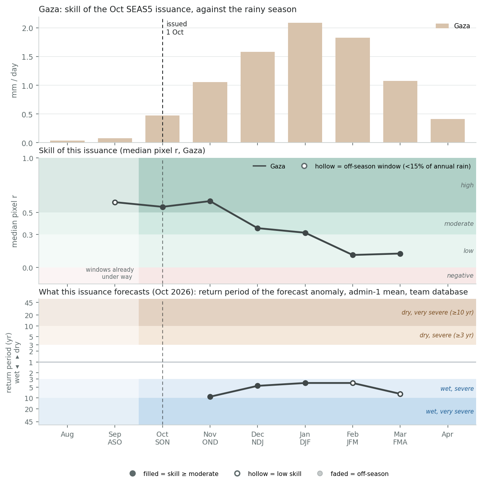
More about this figure
Hollow markers are windows holding under 15% of Gaza's annual rain (the app's off-season mask); windows left of the dashed vertical had already started at issuance, so part of them is observed rather than forecast. Third panel: the return period of the Oct 2026 forecast anomaly in each window (Weibull rank of the forecast among its own hindcasts, the app's forecast_rp / flood_rp), here for the area mean (see the note above the figure); dry seasons plot above the axis and wet below, with the app's severe (3-year) and very severe (10-year) alert bands. Filled markers mean the skill there is at least moderate, the app's condition for raising an alert.| Zone | Cells | ASO in-season | SON in-season | OND 0-mo lead | NDJ 1-mo lead | DJF 2-mo lead | JFM 3-mo lead | FMA 4-mo lead |
|---|---|---|---|---|---|---|---|---|
| Gaza | 3 | +0.60 high 100% ≥ mod. · — | +0.55 high 100% ≥ mod. · — | +0.60 high 100% ≥ mod. · wet 9.2 yr | +0.36 moderate 100% ≥ mod. · wet 4.6 yr | +0.32 moderate 67% ≥ mod. · wet 3.8 yr | +0.11 low 0% ≥ mod. · wet 3.8 yr | +0.13 low 0% ≥ mod. · wet 7.7 yr |
Each cell: median pixel r, its bin, the share of the zone's cells at moderate-or-better skill, and the return period of the Oct 2026 forecast anomaly for the area mean (dry = forecast below its hindcast median).
Notes and method
Skill source: skill_stats_grid_detrended.nc (seas5-skill, DEV blob), the same cube behind the app's pixel skill map. Median of pixel correlations, not the correlation of the area mean, so it is a conservative summary for a coherent area.
Cross-check from the raw ensemble-mean files (box 31.0–31.8°N, 34.0–34.8°E), Oct issuances 1981–2026: where the 2026 forecast ranks among all 46 (1 = wettest), its ratio to the hindcast mean, and the three wettest hindcast years.
| Window | Rank | Ratio to mean | Wettest hindcasts (issuance year) |
|---|---|---|---|
| OND | 9 of 46 | 1.11 | 1986, 2018, 1994 |
| NDJ | 13 of 46 | 1.05 | 2018, 2002, 1986 |
| DJF | 17 of 46 | 1.03 | 1981, 2018, 1986 |
| JFM | 13 of 46 | 1.05 | 1985, 1990, 1982 |
| FMA | 7 of 46 | 1.11 | 1985, 1990, 1982 |
The same forecast, month by month
By month, the forecast is above its hindcast mean in October (25 per cent, the 11th-wettest of 46 October forecasts), November (7 per cent) and December (10 per cent), at its mean in January and February, and well above it in March (28 per cent, the 4th-wettest) and April (18 per cent). The October signal is much smaller than a month ago, when the September issuance had October 79 per cent above its mean. Skill for single months is high for October (r = 0.54), moderate for November and low from December on (0.06–0.23), so read the monthly split as a guide to where the three-month signal sits, not as a forecast for individual months.
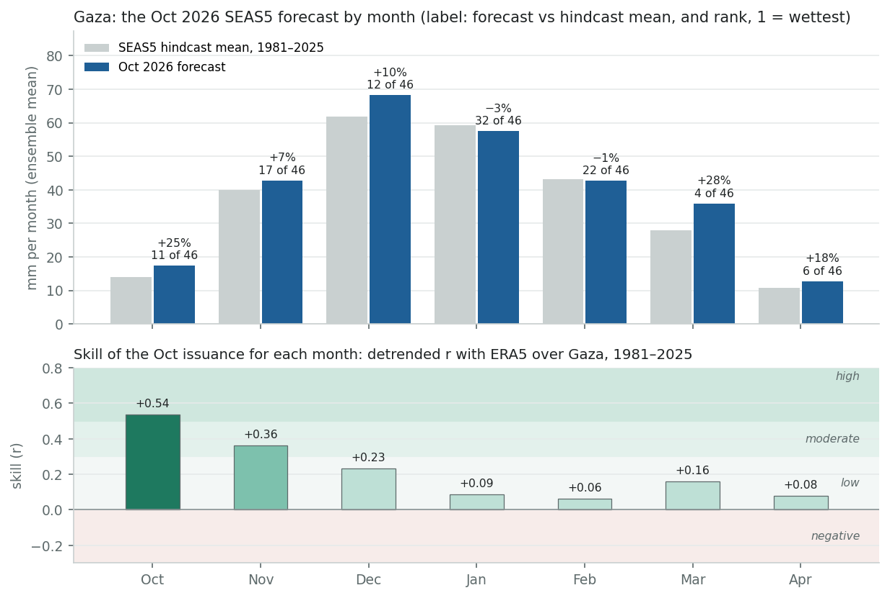
More about this figure
A single month is noisier than a three-month window, so monthly skill is lower than in the figure above.| Month | Hindcast mean | Forecast | vs mean | Rank (1 = wettest) | Skill r | ERA5 mean, Gaza |
|---|---|---|---|---|---|---|
| Oct | 14 mm | 17 mm | +25% | 11 of 46 | +0.54 high | 14 mm |
| Nov | 40 mm | 43 mm | +7% | 17 of 46 | +0.36 moderate | 28 mm |
| Dec | 62 mm | 68 mm | +10% | 12 of 46 | +0.23 low | 43 mm |
| Jan | 59 mm | 57 mm | −3% | 32 of 46 | +0.09 low | 60 mm |
| Feb | 43 mm | 43 mm | −1% | 22 of 46 | +0.06 low | 49 mm |
| Mar | 28 mm | 36 mm | +28% | 4 of 46 | +0.16 low | 32 mm |
| Apr | 11 mm | 13 mm | +18% | 6 of 46 | +0.08 low | 12 mm |
SEAS5 ensemble-mean totals are smoother than any single year, so compare the forecast with the hindcast mean and rank, not with observed rainfall. ERA5 mean: the three cells over Gaza, same years, for scale.
West Bank
Also in this section: Gaza
SEAS5 for the West Bank: skill and the October 2026 forecast
Over the West Bank, ECMWF's October 2026 forecast (SEAS5, published on 5 October) still shows a wet start to the season, though a less extreme one than a month ago. October–December is at a 9-year wet return period with high skill (r = 0.62); the September issuance had it at 23 years. The later windows also lean wet (about 3.5 to 7 years), with moderate skill at best. SEAS5's wettest October–December hindcasts for the area are El Niño winters, so this is the El Niño signal the model carries.
More detail
November–January is at about 7 years with moderate skill, December–February at about 3.5 years with moderate skill (0.33), January–March at about 4 years with low skill, and February–April at about 6 years with skill just at the moderate threshold (0.31). The raw ensemble-mean files show the same shape more modestly: October–December is the 8th-wettest of 46 October forecasts since 1981 and 12 per cent above the hindcast mean, and the later windows are 1–8 per cent above it. The return periods rank higher than the raw values because the app's method takes a long-term trend out of the hindcasts first. SEAS5's wettest October–December hindcasts for the area are 1986, 2018 and 2002, all El Niño winters. (The skill table counts 17 cells, every 0.25° cell touching the West Bank; the ERA5 series uses the 16 that cover more than 0.5 per cent of it.)
What the Oct 2026 issuance forecasts. Windows at or beyond the app's 3-year return-period threshold (in-season windows excluded): OND wet 9 yr (high skill), NDJ wet 7 yr (moderate skill), DJF wet 4 yr (moderate skill), JFM wet 4 yr (low skill), FMA wet 6 yr (moderate skill). Under the app's rule, an alert needs the return period and at least moderate skill. Until the pixel product is out this is provisional: OND, NDJ, DJF meet both conditions on either measure of skill; FMA (pixel-median r 0.31, area-mean r 0.27) sits at the moderate-skill boundary.
Source of the October 2026 return periods
The seas5-skill app's pixel product, which this page normally reads, is recomputed the day after a new forecast lands, so the return periods here come from the team's raster statistics for the West Bank as one area (the ensemble mean averaged over the admin-1 polygon, in the team database), ranked against the October hindcasts of 1981–2025 with the app's own method. Skill is still the median pixel correlation from the app's cube, which depends on the hindcasts and not on the new forecast. Windows that had already started at issuance are left blank: they blend in observed months, and the latest ERA5 month arrives a day after the forecast.
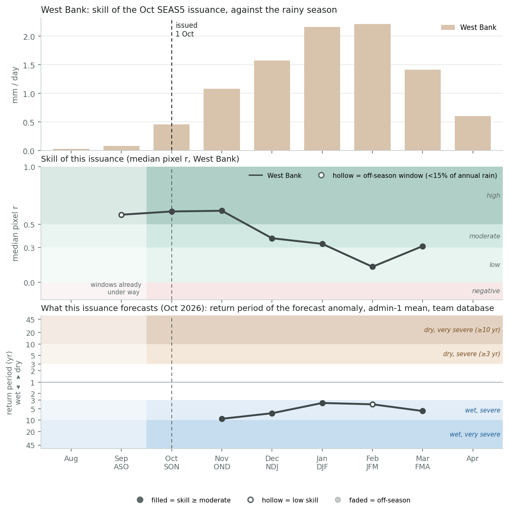
More about this figure
Hollow markers are windows holding under 15% of the West Bank's annual rain (the app's off-season mask); windows left of the dashed vertical had already started at issuance, so part of them is observed rather than forecast. Third panel: the return period of the Oct 2026 forecast anomaly in each window (Weibull rank of the forecast among its own hindcasts, the app's forecast_rp / flood_rp), here for the area mean (see the note above the figure); dry seasons plot above the axis and wet below, with the app's severe (3-year) and very severe (10-year) alert bands. Filled markers mean the skill there is at least moderate, the app's condition for raising an alert.| Zone | Cells | ASO in-season | SON in-season | OND 0-mo lead | NDJ 1-mo lead | DJF 2-mo lead | JFM 3-mo lead | FMA 4-mo lead |
|---|---|---|---|---|---|---|---|---|
| West Bank | 17 | +0.58 high 100% ≥ mod. · — | +0.61 high 100% ≥ mod. · — | +0.62 high 100% ≥ mod. · wet 9.2 yr | +0.38 moderate 100% ≥ mod. · wet 6.6 yr | +0.33 moderate 71% ≥ mod. · wet 3.5 yr | +0.13 low 0% ≥ mod. · wet 3.8 yr | +0.31 moderate 53% ≥ mod. · wet 5.8 yr |
Each cell: median pixel r, its bin, the share of the zone's cells at moderate-or-better skill, and the return period of the Oct 2026 forecast anomaly for the area mean (dry = forecast below its hindcast median).
Notes and method
Skill source: skill_stats_grid_detrended.nc (seas5-skill, DEV blob), the same cube behind the app's pixel skill map. Median of pixel correlations, not the correlation of the area mean, so it is a conservative summary for a coherent area.
Cross-check from the raw ensemble-mean files (box 31.2–32.6°N, 34.8–35.6°E), Oct issuances 1981–2026: where the 2026 forecast ranks among all 46 (1 = wettest), its ratio to the hindcast mean, and the three wettest hindcast years.
| Window | Rank | Ratio to mean | Wettest hindcasts (issuance year) |
|---|---|---|---|
| OND | 8 of 46 | 1.12 | 1986, 2018, 2002 |
| NDJ | 16 of 46 | 1.05 | 2002, 2018, 1986 |
| DJF | 18 of 46 | 1.01 | 2018, 2009, 1985 |
| JFM | 17 of 46 | 1.03 | 1985, 1982, 2009 |
| FMA | 9 of 46 | 1.08 | 1985, 1982, 1990 |
The same forecast, month by month
By month, the forecast is above its hindcast mean in October (29 per cent, the 11th-wettest of 46 October forecasts), November (13 per cent) and December (7 per cent), close to it in January and February, and well above it in March (23 per cent, the 2nd-wettest) and April (15 per cent). Skill for single months is high for October (r = 0.57), moderate for November and December, and low after that, so read the monthly split as a guide to where the three-month signal sits.
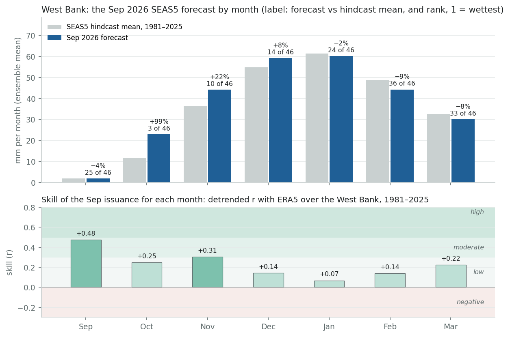
More about this figure
A single month is noisier than a three-month window, so monthly skill is lower than in the figure above.| Month | Hindcast mean | Forecast | vs mean | Rank (1 = wettest) | Skill r | ERA5 mean, West Bank |
|---|---|---|---|---|---|---|
| Oct | 12 mm | 16 mm | +29% | 11 of 46 | +0.57 high | 17 mm |
| Nov | 35 mm | 39 mm | +13% | 13 of 46 | +0.46 moderate | 38 mm |
| Dec | 59 mm | 63 mm | +7% | 14 of 46 | +0.36 moderate | 56 mm |
| Jan | 60 mm | 59 mm | −2% | 29 of 46 | +0.05 low | 77 mm |
| Feb | 47 mm | 45 mm | −4% | 27 of 46 | +0.23 low | 72 mm |
| Mar | 34 mm | 41 mm | +23% | 2 of 46 | +0.15 low | 50 mm |
| Apr | 14 mm | 16 mm | +15% | 8 of 46 | +0.24 low | 20 mm |
SEAS5 ensemble-mean totals are smoother than any single year, so compare the forecast with the hindcast mean and rank, not with observed rainfall. ERA5 mean: the 16 cells over the West Bank, same years, for scale.
2. How much El Niño matters
Gaza
Also in this section: West Bank · Both areas
In this part: The link switched on in the late 1970s · What El Niño winters have looked like since 1979 · Every strong El Niño winter since 1950 · Which part of the winter
Gaza's rain falls between October and April, most of it from December to February, almost all of it from Mediterranean cyclones. Gaza is 365 km²: three ERA5 cells and a corner of one GPCC cell. So this section uses four rainfall records: two gauge-based (the GPCC analysis, and the Beer Sheva gauge, which is one of GPCC's inputs), a reanalysis that assimilates no rain gauges (ERA5), and a satellite product (IMERG). It asks two questions: does El Niño make Gaza's winter wetter, and has it always done so?

The link switched on in the late 1970s
Since the late 1970s, yes; before that, no. Since 1979 the correlation between the October–April total and December–February Niño3.4 is +0.55 in GPCC (to 2024/25), +0.59 in ERA5 (to 2025/26) and +0.67 at the Beer Sheva gauge (to 2015/16). Each is significant at p < 0.001 and unchanged by detrending, and each holds at +0.45 to +0.62 without 1982/83 and 1991/92. Before 1979 the same records give −0.06 (GPCC, from 1891), −0.26 (Beer Sheva, from 1921; nominally significant, p = 0.045) and −0.26 (ERA5, from 1950). Over each full record the correlation is weak (+0.13 to +0.29). All three running correlations climb out of the noise band in the early 1980s and stay out. The switch is in the gauge records as well as the reanalysis, so it is not an artefact of ERA5.
The literature found the same break. Price et al. (1998) saw significant correlations only in the last 25 years of their Israeli record, and Alpert et al. (2005) found no connection before the 1970s. A 2026 Israel Meteorological Service technical report (not peer-reviewed) finds r ≈ 0.50–0.55 over the last 50 years, strongest in the northern Negev and the Shephelah next to Gaza, and about 11–14 per cent more rain per degree of Niño3.4. Similar switches have been found for Arabian winter rainfall (Kang et al. 2015) and Euro-Mediterranean winter storm frequency (Kamil et al. 2017: −0.24 in 1950–79, +0.44 in 1987–2016). Reviews call the eastern Mediterranean ENSO influence “seasonally dependent, small, and intermittent” (Dayan et al. 2015).
What this means for use: the relationship has held for 45 winters, the whole period in which seasonal forecasts have existed. But it is not a law of nature, and it could weaken again. IMERG (1998–) agrees on the sign but is weaker (r = +0.31, not significant over 28 winters). Its seasonal totals track the gauges less well (r = 0.72 with GPCC) than ERA5 does (0.91).

| Record | Winters | Niño3.4 | r | p | r, detrended |
|---|---|---|---|---|---|
| GPCC gauge analysis (1° cell) | 1891/92 – 1978/79 | HadISST | −0.06 | 0.604 | −0.09 |
| GPCC gauge analysis (1° cell) | 1979/80 – 2024/25 | ERSST v5 (pinned) | +0.55 | <0.001 | +0.56 |
| GPCC gauge analysis (1° cell) | 1998/99 – 2024/25 | ERSST v5 (pinned) | +0.46 | 0.015 | +0.50 |
| GPCC gauge analysis (1° cell) | 1891/92 – 2024/25 | HadISST | +0.14 | 0.101 | +0.15 |
| Beer Sheva rain gauge | 1921/22 – 1978/79 | HadISST | −0.26 | 0.045 | −0.26 |
| Beer Sheva rain gauge | 1979/80 – 2015/16 | ERSST v5 (pinned) | +0.67 | <0.001 | +0.68 |
| Beer Sheva rain gauge | 1921/22 – 2015/16 | HadISST | +0.13 | 0.195 | +0.13 |
| ERA5 (3 cells over Gaza) | 1950/51 – 1978/79 | HadISST | −0.26 | 0.166 | −0.26 |
| ERA5 (3 cells over Gaza) | 1979/80 – 2025/26 | ERSST v5 (pinned) | +0.59 | <0.001 | +0.59 |
| ERA5 (3 cells over Gaza) | 1998/99 – 2025/26 | ERSST v5 (pinned) | +0.54 | 0.003 | +0.54 |
| ERA5 (3 cells over Gaza) | 1950/51 – 2025/26 | HadISST | +0.29 | 0.011 | +0.30 |
| IMERG late v7 (Gaza, 0.1°) | 1998/99 – 2025/26 | ERSST v5 (pinned) | +0.31 | 0.109 | +0.31 |
Is the change real? A Fisher z-test for the difference between the correlations before and after 1979: ERA5 z = 3.8, p < 0.001; GPCC z = 3.6, p < 0.001; Beer Sheva gauge z = 5.0, p < 0.001.
Notes and method
The 1979 break was not chosen blind: it is where the literature places the change (Price et al. 1998; Alpert et al. 2005) and the start of the satellite era. p-values for the period after the break are conditional on choosing it; the full-record rows show what an unsplit analysis gives.
What El Niño winters have looked like since 1979
Since 1979, 9 of the 14 El Niño winters in the GPCC record fell in the wettest third and 2 in the driest; in ERA5, 9 and none. La Niña winters ran the other way: 2 of 19 in the wettest third and 10 in the driest. Before 1979, El Niño winters were as likely to be dry as wet (8 in the wettest third and 11 in the driest, of 25), and La Niña winters were if anything wet (11 of 26 in the wettest third, 5 in the driest).
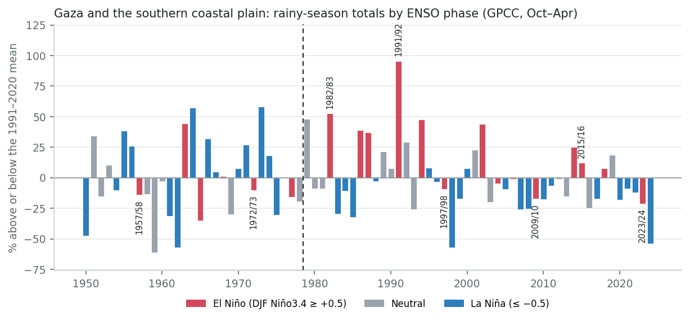
| Record, period | ENSO phase | Winters | Wettest third | Middle third | Driest third |
|---|---|---|---|---|---|
| GPCC, 1891/92 – 1978/79 | El Niño | 25 | 8 | 6 | 11 |
| GPCC, 1891/92 – 1978/79 | Neutral | 37 | 11 | 13 | 13 |
| GPCC, 1891/92 – 1978/79 | La Niña | 26 | 11 | 10 | 5 |
| GPCC, 1979/80 – 2024/25 | El Niño | 14 | 9 | 3 | 2 |
| GPCC, 1979/80 – 2024/25 | Neutral | 13 | 5 | 5 | 3 |
| GPCC, 1979/80 – 2024/25 | La Niña | 19 | 2 | 7 | 10 |
| ERA5, 1979/80 – 2025/26 | El Niño | 14 | 9 | 5 | 0 |
| ERA5, 1979/80 – 2025/26 | Neutral | 13 | 5 | 4 | 4 |
| ERA5, 1979/80 – 2025/26 | La Niña | 20 | 2 | 7 | 11 |
Terciles are computed within each period, so each period is judged against its own climate.
Notes and method
Phase from December–February Niño3.4 (±0.5 °C): HadISST before 1979, the pinned ERSST v5 series from 1979. On HadISST, 16 winters since 1979 count as El Niño rather than 14, and 11 of them were in the GPCC wettest third.
Every strong El Niño winter since 1950
Strength does not buy certainty, and the literature agrees that larger El Niños do not reliably bring larger rainfall anomalies here (Mariotti et al. 2002; Alpert et al. 2005). Of the six strong El Niños since 1979:
- three were wet: 1982/83 and 1991/92, the two wettest winters since 1979, and 2015/16;
- one was normal (1997/98);
- two were normal to dry, depending on the record: 2009/10, and 2023/24, the first winter after October 2023.
1982/83 and 1991/92 both followed major volcanic eruptions (El Chichón, Pinatubo), and 1991/92 was unusually cold across the Middle East. That makes them doubtful analogues for a winter every forecast expects to be warm. It is a caution about analogues, not a reason to discount them: we found no study attributing their rainfall to the eruptions. The two strong events before 1979 (1957/58, 1972/73) were normal to dry. The El Niño winters that delivered most reliably were moderate ones (1986/87, 1987/88, 1994/95, 2002/03).
| Winter | Niño3.4 DJF | GPCC | ERA5 | Beer Sheva | IMERG | Note |
|---|---|---|---|---|---|---|
| 1957/58 | +1.5 | 283 mm 38th pct · middle | 184 mm 21st pct · driest | 102 mm 10th pct · driest | — | |
| 1972/73 | +1.7 | 295 mm 48th pct · middle | 257 mm 55th pct · middle | 166 mm 45th pct · middle | — | |
| 1982/83 | +2.2 | 502 mm 98th pct · wettest | 360 mm 98th pct · wettest | 263 mm 92nd pct · wettest | — | El Chichón erupted in April 1982; 1982/83 is in Dogar et al.'s (2017) composite of volcanically cooled Middle East winters. |
| 1991/92 | +1.8 | 643 mm 100th pct · wettest | 424 mm 100th pct · wettest | 280 mm 95th pct · wettest | — | Pinatubo erupted in June 1991; snow in Jerusalem and the Negev; about twice the average rainfall in Israel (IMS). |
| 1997/98 | +2.2 | 298 mm 43rd pct · middle | 261 mm 62nd pct · middle | 184 mm 43rd pct · middle | — | |
| 2009/10 | +1.5 | 272 mm 33rd pct · driest | 232 mm 53rd pct · middle | 208 mm 62nd pct · middle | 276 mm 36th pct · middle | IMS: southern coastal plain 50–75% of normal. |
| 2015/16 | +2.5 | 369 mm 74th pct · wettest | 283 mm 79th pct · wettest | 255 mm 84th pct · wettest | 324 mm 57th pct · middle | IMS: Be'eri, next to Gaza, 153% of normal; nationally a dry year. |
| 2023/24 | +1.8 | 259 mm 20th pct · driest | 208 mm 34th pct · middle | — | 258 mm 32nd pct · driest | IMS: 70–90% of normal in the areas of Israel next to Gaza while northern Israel had 130–165%; about 2 °C warmer than average. |
Niño3.4 ≥ +1.5 °C in December–February on the pinned series. Percentiles are within 1979–2025 for winters from 1979, within 1950–1978 before.
Which part of the winter
The concurrent signal runs through the whole season, strongest early: r = 0.35–0.52 for every three-month window from October–December to January–March, in both GPCC and ERA5. What matters for a forecast now is the August–October Niño3.4, known before the season starts. It predicts the season total nearly as well (r = 0.45 in GPCC, 0.50 in ERA5), the windows from October–December to December–February at 0.32–0.46, and January–March more weakly (0.28–0.29, borderline significant). That matches SEAS5, whose skill fades after December, and the literature, which puts the eastern Mediterranean ENSO signal in autumn and early winter (Hochman & Gildor 2025; Mariotti et al. 2005).
| Record | Window | r, concurrent Niño3.4 | p | r, Aug–Oct Niño3.4 | p |
|---|---|---|---|---|---|
| GPCC | OND | +0.42 | 0.003 | +0.36 | 0.013 |
| GPCC | NDJ | +0.41 | 0.005 | +0.32 | 0.031 |
| GPCC | DJF | +0.41 | 0.004 | +0.35 | 0.019 |
| GPCC | JFM | +0.35 | 0.017 | +0.29 | 0.054 |
| GPCC | Oct–Apr | +0.55 | <0.001 | +0.45 | 0.002 |
| ERA5 | OND | +0.52 | <0.001 | +0.46 | 0.001 |
| ERA5 | NDJ | +0.48 | <0.001 | +0.44 | 0.002 |
| ERA5 | DJF | +0.40 | 0.005 | +0.37 | 0.011 |
| ERA5 | JFM | +0.36 | 0.013 | +0.28 | 0.052 |
| ERA5 | Oct–Apr | +0.59 | <0.001 | +0.50 | <0.001 |
1979–2025. Concurrent = Niño3.4 averaged over the same three months (December–February for October–April). August–October Niño3.4 is the value known when the season starts.
West Bank
Also in this section: Gaza · Both areas
In this part: The link switched on in the late 1970s · What El Niño winters have looked like since 1979 · Every strong El Niño winter since 1950 · Which part of the winter
The West Bank's rain falls between October and April, mostly from December to February. The hills rise to 700–1,000 m and drop steeply east to the Jordan Valley, about 300 m below sea level, and rainfall more than halves from the western slopes to the valley. This section uses four records:
- the GPCC gauge analysis;
- the Jerusalem rain gauge (St Anne to spring 1948, Jerusalem Central from autumn 1948 to 2015), which is one of GPCC's inputs;
- ERA5 over the 16 cells covering the West Bank, a reanalysis that assimilates no rain gauges;
- IMERG.

More about this figure
ERA5 is the mean of the 16 0.25° cells over the West Bank, weighted by the share of the West Bank in each; IMERG is the area-weighted mean of the 0.1° cells over the West Bank.The link switched on in the late 1970s
Since the late 1970s, yes; before that, no. Since 1979 the correlation between the October–April total and December–February Niño3.4 is +0.57 in GPCC (to 2024/25), +0.59 at the Jerusalem gauge (to 2013/14) and +0.59 in ERA5 (to 2025/26). Each is significant at p < 0.001 and unchanged by detrending. Before 1979 the same records give −0.03 (GPCC, from 1891), −0.16 (Jerusalem, from 1909) and −0.21 (ERA5, from 1950). Over each full record the correlation is weak (+0.16 to +0.30). As in Gaza, the switch shows in the gauge records as well as the reanalysis.
The literature found the same break. Price et al. (1998) saw significant correlations only in the last 25 years of their Israeli record, and Alpert et al. (2005) found no connection before the 1970s. A 2026 Israel Meteorological Service technical report (not peer-reviewed) finds r ≈ 0.50–0.55 over the last 50 years, strongest in the hills around Jerusalem, the Shephelah and the northern Negev. IMERG (1998–) agrees on the sign but is weaker (r = +0.30, not significant over 28 winters).

| Record | Winters | Niño3.4 | r | p | r, detrended |
|---|---|---|---|---|---|
| GPCC gauge analysis (1° cells) | 1891/92 – 1978/79 | HadISST | −0.03 | 0.769 | −0.05 |
| GPCC gauge analysis (1° cells) | 1979/80 – 2024/25 | ERSST v5 (pinned) | +0.57 | <0.001 | +0.58 |
| GPCC gauge analysis (1° cells) | 1998/99 – 2024/25 | ERSST v5 (pinned) | +0.50 | 0.009 | +0.52 |
| GPCC gauge analysis (1° cells) | 1891/92 – 2024/25 | HadISST | +0.19 | 0.029 | +0.20 |
| Jerusalem rain gauge (St Anne to spring 1948, Central from autumn 1948) | 1909/10 – 1978/79 | HadISST | −0.16 | 0.182 | −0.16 |
| Jerusalem rain gauge (St Anne to spring 1948, Central from autumn 1948) | 1979/80 – 2013/14 | ERSST v5 (pinned) | +0.59 | <0.001 | +0.57 |
| Jerusalem rain gauge (St Anne to spring 1948, Central from autumn 1948) | 1909/10 – 2013/14 | HadISST | +0.16 | 0.099 | +0.17 |
| ERA5 (16 cells over the West Bank) | 1950/51 – 1978/79 | HadISST | −0.21 | 0.277 | −0.21 |
| ERA5 (16 cells over the West Bank) | 1979/80 – 2025/26 | ERSST v5 (pinned) | +0.59 | <0.001 | +0.59 |
| ERA5 (16 cells over the West Bank) | 1998/99 – 2025/26 | ERSST v5 (pinned) | +0.48 | 0.009 | +0.47 |
| ERA5 (16 cells over the West Bank) | 1950/51 – 2025/26 | HadISST | +0.30 | 0.009 | +0.30 |
| IMERG late v7 (West Bank, 0.1°) | 1998/99 – 2025/26 | ERSST v5 (pinned) | +0.30 | 0.124 | +0.27 |
Is the change real? A Fisher z-test for the difference between the correlations before and after 1979: ERA5 z = 3.6, p < 0.001; GPCC z = 3.6, p < 0.001; Jerusalem gauge z = 3.9, p < 0.001.
Notes and method
The 1979 break was not chosen blind: it is where the literature places the change (Price et al. 1998; Alpert et al. 2005) and the start of the satellite era. p-values for the period after the break are conditional on choosing it; the full-record rows show what an unsplit analysis gives.
What El Niño winters have looked like since 1979
Since 1979, 9 of the 14 El Niño winters in GPCC fell in the West Bank's wettest third and none in the driest; in ERA5, 9 and one. La Niña winters ran the other way: 2 of 19 in the wettest third and 11 in the driest. Before 1979 El Niño winters were spread evenly (9 wettest, 7 driest of 25).
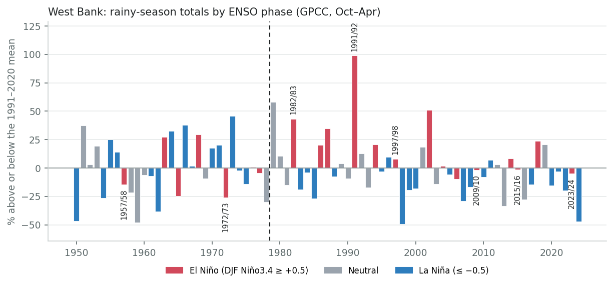
| Record, period | ENSO phase | Winters | Wettest third | Middle third | Driest third |
|---|---|---|---|---|---|
| GPCC, 1891/92 – 1978/79 | El Niño | 25 | 9 | 9 | 7 |
| GPCC, 1891/92 – 1978/79 | Neutral | 37 | 12 | 11 | 14 |
| GPCC, 1891/92 – 1978/79 | La Niña | 26 | 9 | 9 | 8 |
| GPCC, 1979/80 – 2024/25 | El Niño | 14 | 9 | 5 | 0 |
| GPCC, 1979/80 – 2024/25 | Neutral | 13 | 5 | 4 | 4 |
| GPCC, 1979/80 – 2024/25 | La Niña | 19 | 2 | 6 | 11 |
| ERA5, 1979/80 – 2025/26 | El Niño | 14 | 9 | 4 | 1 |
| ERA5, 1979/80 – 2025/26 | Neutral | 13 | 4 | 5 | 4 |
| ERA5, 1979/80 – 2025/26 | La Niña | 20 | 3 | 7 | 10 |
Terciles are computed within each period, so each period is judged against its own climate.
Notes and method
Phase from December–February Niño3.4 (±0.5 °C): HadISST before 1979, the pinned ERSST v5 series from 1979. On HadISST, 16 winters since 1979 count as El Niño rather than 14, and 11 of them were in the GPCC wettest third.
Every strong El Niño winter since 1950
None of the six strong El Niños since 1979 was in the driest third in GPCC or at the Jerusalem gauge, a stronger result than in Gaza. But other records put single winters there, and the two wettest strong events followed volcanic eruptions.
More detail
Two of the other records disagree for single winters: ERA5 puts 2009/10 just inside its driest third (32nd percentile), and IMERG puts 2015/16, the strongest event in the record, there too (21st percentile). The Israel Meteorological Service says a dry 2026/27 “like 2015/16” cannot be ruled out. The two wettest strong events both followed major volcanic eruptions: 1982/83, and 1991/92, Jerusalem's wettest winter on record, with heavy snow in February 1992. That makes them doubtful analogues for a winter forecast to be warm. 1997/98 was wet in GPCC and ERA5 but normal at Jerusalem; 2009/10, 2015/16 and 2023/24 were near normal in GPCC. The two strong events before 1979 were dry or normal.
| Winter | Niño3.4 DJF | GPCC | ERA5 | Jerusalem | IMERG | Note |
|---|---|---|---|---|---|---|
| 1957/58 | +1.5 | 323 mm 31st pct · driest | 248 mm 17th pct · driest | 340 mm 17th pct · driest | — | |
| 1972/73 | +1.7 | 281 mm 21st pct · driest | 295 mm 45th pct · middle | 452 mm 34th pct · middle | — | |
| 1982/83 | +2.2 | 542 mm 93rd pct · wettest | 440 mm 89th pct · wettest | 866 mm 97th pct · wettest | — | |
| 1991/92 | +1.8 | 751 mm 100th pct · wettest | 529 mm 100th pct · wettest | 1117 mm 100th pct · wettest | — | Pinatubo erupted in June 1991; Jerusalem's wettest winter on record, heavy snow in February 1992. |
| 1997/98 | +2.2 | 408 mm 70th pct · wettest | 432 mm 85th pct · wettest | 458 mm 34th pct · middle | — | |
| 2009/10 | +1.5 | 372 mm 57th pct · middle | 299 mm 32nd pct · driest | 495 mm 49th pct · middle | 566 mm 96th pct · wettest | |
| 2015/16 | +2.5 | 373 mm 59th pct · middle | 342 mm 66th pct · middle | — | 325 mm 21st pct · driest | |
| 2023/24 | +1.8 | 360 mm 48th pct · middle | 337 mm 55th pct · middle | — | 471 mm 79th pct · wettest | Palestinian Meteorological Department, season to 21 March: wet north (Tulkarm 144%), drier south (Jerusalem 86%, Hebron 75%). |
Niño3.4 ≥ +1.5 °C in December–February on the pinned series. Percentiles are within 1979–2025 for winters from 1979, within 1950–1978 before.
Which part of the winter
The concurrent signal runs through the whole season and is strongest in October–December (r = 0.47–0.54). The August–October Niño3.4, known before the season starts, predicts the season total nearly as well (r = 0.49 in GPCC, 0.54 in ERA5). Unlike in Gaza, it still says something about January–March (0.33–0.37).
| Record | Window | r, concurrent Niño3.4 | p | r, Aug–Oct Niño3.4 | p |
|---|---|---|---|---|---|
| GPCC | OND | +0.47 | <0.001 | +0.41 | 0.004 |
| GPCC | NDJ | +0.47 | <0.001 | +0.40 | 0.006 |
| GPCC | DJF | +0.42 | 0.004 | +0.38 | 0.010 |
| GPCC | JFM | +0.37 | 0.012 | +0.33 | 0.023 |
| GPCC | Oct–Apr | +0.57 | <0.001 | +0.49 | <0.001 |
| ERA5 | OND | +0.54 | <0.001 | +0.51 | <0.001 |
| ERA5 | NDJ | +0.47 | <0.001 | +0.43 | 0.002 |
| ERA5 | DJF | +0.45 | 0.001 | +0.42 | 0.003 |
| ERA5 | JFM | +0.42 | 0.003 | +0.37 | 0.011 |
| ERA5 | Oct–Apr | +0.59 | <0.001 | +0.54 | <0.001 |
1979–2025. Concurrent = Niño3.4 averaged over the same three months (December–February for October–April). August–October Niño3.4 is the value known when the season starts.
The signal is not an artefact of either area. Across the southern Levant (the Israeli coastal plain, the hills of the West Bank, western Jordan and southern Lebanon), cells show the same positive correlation. It is most coherent in October–December (97 per cent of analysable cells at r ≥ 0.3, though only 71 cells are analysable; the rest are too dry in that window) and November–January (76 per cent of 144), and patchier in December–February and January–March. As in the survey, each cell keeps the best of four lags (0–3 months), which flatters r somewhat; the composite maps use concurrent December–February Niño3.4 and no lag search. Over the 14 El Niño winters of 1981/82–2025/26, every analysed cell in the region had a positive mean anomaly.
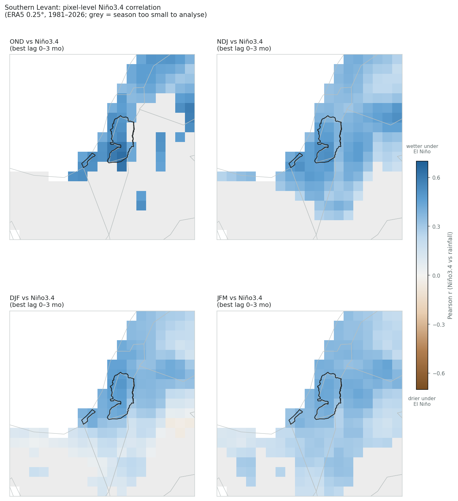
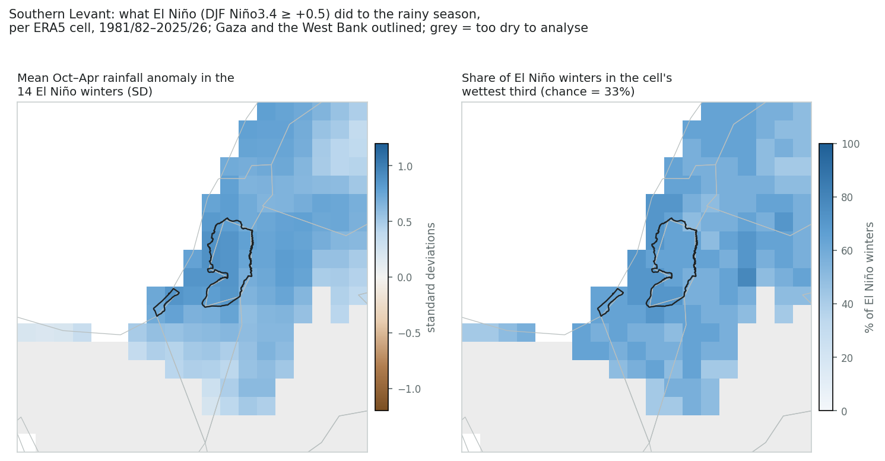
3. What changes in an El Niño winter, and what does not
Gaza
Also in this section: West Bank
A wetter El Niño winter is mostly a winter with more rainy days, not bigger storms. In all three records the number of rain days rises with Niño3.4 (r = 0.55–0.65): ERA5 has 54 in an average El Niño winter against 42 in a La Niña winter, IMERG 41 against 33, and the Beer Sheva gauge 33 against 22. The heaviest days are only loosely tied (correlations of 0.16–0.34 for days of 20 mm or more and for the season's wettest day), and cold nights not at all.
More detail
Days of 10 mm or more rise clearly at Beer Sheva (7.8 against 4.4) and in ERA5, but not in IMERG. Of the heaviest-day measures, only ERA5's wettest day clears p < 0.05. The Israel Meteorological Service likewise finds no significant El Niño link to daily or storm maximum rainfall, but about 15 per cent more days with a nearby low in El Niño than in La Niña winters. Cold nights show no link (Beer Sheva, r = +0.08). Windy days may be somewhat more frequent (12.8 against 9.3 days in the windiest 5 per cent of ERA5's winter days, r = +0.34, p = 0.02); with 17 tests in the table, treat that as suggestive.
The distinction matters for people in tents. The storms that tear down shelters and flood whole sites, like Byron in December 2025, can come in any winter. What El Niño adds is more wet days around them. Our reading, not tested here, is that this is what keeps ground saturated, stormwater basins full and bedding wet between storms.
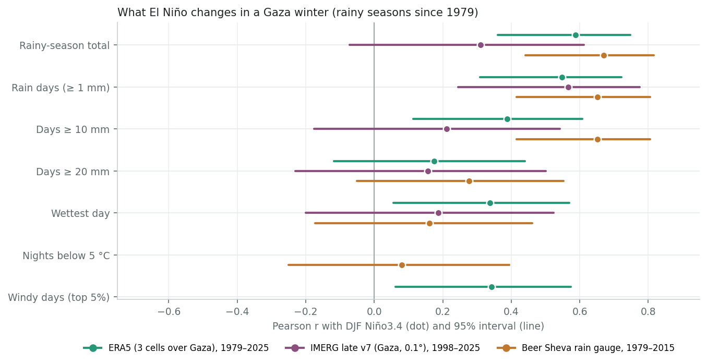
More about this figure
Windy days: days whose highest hourly ERA5 10 m wind reaches the top 5% of winter days (8.2 m/s; ERA5 winds are cell averages and understate gusts). Nights below 5 °C: the Beer Sheva gauge only, because the ERA5 cells are partly sea and rarely get that cold.| Metric | Record | El Niño | Neutral | La Niña | r | p |
|---|---|---|---|---|---|---|
| Rainy-season total | ERA5 1979–2025 | 289.8 mm | 240.4 mm | 206.6 mm | +0.59 | <0.001 |
| Rainy-season total | IMERG 1998–2025 | 336.7 mm | 323.6 mm | 274.5 mm | +0.31 | 0.109 |
| Rainy-season total | Beer Sheva gauge 1979–2015 | 239.7 mm | 205.3 mm | 151.1 mm | +0.67 | <0.001 |
| Rain days (≥ 1 mm) | ERA5 1979–2025 | 54.3 | 44.4 | 42.4 | +0.55 | <0.001 |
| Rain days (≥ 1 mm) | IMERG 1998–2025 | 41.4 | 34.0 | 32.5 | +0.57 | 0.002 |
| Rain days (≥ 1 mm) | Beer Sheva gauge 1979–2015 | 32.8 | 24.4 | 22.1 | +0.65 | <0.001 |
| Days ≥ 10 mm | ERA5 1979–2025 | 6.5 | 6.1 | 4.2 | +0.39 | 0.007 |
| Days ≥ 10 mm | IMERG 1998–2025 | 9.8 | 10.5 | 8.3 | +0.21 | 0.279 |
| Days ≥ 10 mm | Beer Sheva gauge 1979–2015 | 7.8 | 6.3 | 4.4 | +0.65 | <0.001 |
| Days ≥ 20 mm | ERA5 1979–2025 | 0.6 | 0.5 | 0.3 | +0.18 | 0.239 |
| Days ≥ 20 mm | IMERG 1998–2025 | 3.4 | 4.3 | 2.9 | +0.16 | 0.426 |
| Days ≥ 20 mm | Beer Sheva gauge 1979–2015 | 2.3 | 2.5 | 1.4 | +0.28 | 0.097 |
| Wettest day | ERA5 1979–2025 | 20.8 mm | 19.3 mm | 16.9 mm | +0.34 | 0.020 |
| Wettest day | IMERG 1998–2025 | 51.8 mm | 49.6 mm | 45.7 mm | +0.19 | 0.341 |
| Wettest day | Beer Sheva gauge 1979–2015 | 35.1 mm | 36.4 mm | 28.3 mm | +0.16 | 0.341 |
| Nights below 5 °C | Beer Sheva gauge 1979–2015 | 19.7 | 19.8 | 16.5 | +0.08 | 0.634 |
| Windy days (top 5%) | ERA5 1979–2025 | 12.8 | 10.3 | 9.3 | +0.34 | 0.018 |
Means per winter, by ENSO phase. The records differ in level: ERA5 spreads rain over a 25 km cell and understates heavy days; IMERG is satellite-only; Beer Sheva is drier and 46 km inland. Compare phases within a record, not across records.
West Bank
Also in this section: Gaza
A wetter El Niño winter here is a winter with more rain days and more moderate-to-heavy days. Rain days rise with Niño3.4 in all three records (r = 0.51–0.56): ERA5 has 65 in an average El Niño winter against 50 in a La Niña winter, IMERG 58 against 46, and the Jerusalem gauge 48 against 38. The single wettest day shows no consistent link, and nor do cold nights (ERA5).
More detail
Days of 10 mm or more rise in ERA5 and at Jerusalem (20 against 14). At Jerusalem so do days of 20 mm or more (10 against 7, r = +0.41). Windy days are a little more frequent (r = +0.31). More wet days should mean wetter ground, so that a given storm runs off faster into the wadis; that is a reasonable expectation, not something tested here.
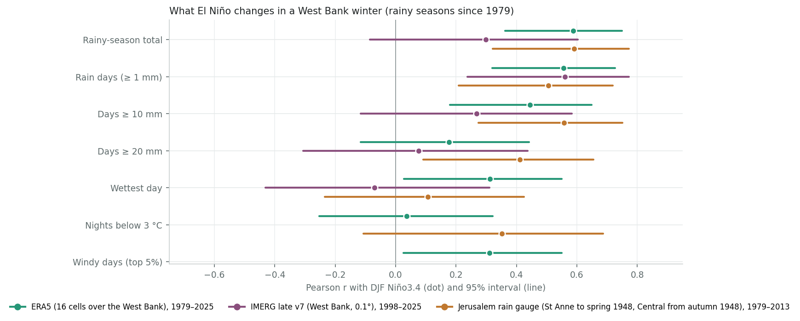
More about this figure
Windy days: days whose highest hourly ERA5 10 m wind reaches the top 5% of winter days (6.2 m/s; ERA5 winds are cell averages and understate gusts). Nights below 3 °C: the Jerusalem gauge (to 1999, when its temperature record ends) and ERA5 (whose cells sit lower than the hill towns, so they run warmer).| Metric | Record | El Niño | Neutral | La Niña | r | p |
|---|---|---|---|---|---|---|
| Rainy-season total | ERA5 1979–2025 | 396.2 mm | 333.4 mm | 292.0 mm | +0.59 | <0.001 |
| Rainy-season total | IMERG 1998–2025 | 443.6 mm | 423.0 mm | 392.3 mm | +0.30 | 0.124 |
| Rainy-season total | Jerusalem gauge 1979–2013 | 668.2 mm | 523.1 mm | 440.8 mm | +0.59 | <0.001 |
| Rain days (≥ 1 mm) | ERA5 1979–2025 | 64.6 | 54.8 | 50.1 | +0.56 | <0.001 |
| Rain days (≥ 1 mm) | IMERG 1998–2025 | 58.4 | 51.5 | 46.4 | +0.56 | 0.002 |
| Rain days (≥ 1 mm) | Jerusalem gauge 1979–2013 | 48.3 | 40.4 | 37.9 | +0.51 | 0.002 |
| Days ≥ 10 mm | ERA5 1979–2025 | 10.9 | 9.3 | 7.7 | +0.44 | 0.002 |
| Days ≥ 10 mm | IMERG 1998–2025 | 12.4 | 11.0 | 11.1 | +0.27 | 0.168 |
| Days ≥ 10 mm | Jerusalem gauge 1979–2013 | 20.0 | 14.9 | 13.5 | +0.56 | <0.001 |
| Days ≥ 20 mm | ERA5 1979–2025 | 1.6 | 1.6 | 1.1 | +0.18 | 0.234 |
| Days ≥ 20 mm | IMERG 1998–2025 | 4.5 | 4.7 | 4.4 | +0.08 | 0.700 |
| Days ≥ 20 mm | Jerusalem gauge 1979–2013 | 10.3 | 7.9 | 6.8 | +0.41 | 0.014 |
| Wettest day | ERA5 1979–2025 | 25.5 mm | 24.7 mm | 21.6 mm | +0.31 | 0.032 |
| Wettest day | IMERG 1998–2025 | 44.0 mm | 46.4 mm | 49.1 mm | −0.07 | 0.724 |
| Wettest day | Jerusalem gauge 1979–2013 | 70.8 mm | 66.2 mm | 65.4 mm | +0.11 | 0.543 |
| Nights below 3 °C | ERA5 1979–2025 | 1.9 | 2.2 | 1.7 | +0.04 | 0.805 |
| Nights below 3 °C | Jerusalem gauge 1979–1998 | 11.3 | 8.0 | 6.4 | +0.35 | 0.128 |
| Windy days (top 5%) | ERA5 1979–2025 | 12.6 | 10.2 | 9.4 | +0.31 | 0.033 |
Means per winter, by ENSO phase. The records differ in level: ERA5 spreads rain over 25 km cells and understates heavy days; IMERG is satellite-only; Jerusalem is one hill-town gauge. Compare phases within a record, not across records.
4. What winter weather does
Gaza
Also in this section: West Bank
As of September 2026 about 1.7 million people live in roughly 1,600 displacement sites, and 65 per cent of households live in tents or makeshift shelters. Last winter 71 per cent of households were flooded at least once, and 83 per cent of those in tents (Shelter Cluster). The inter-agency flood-exposure outlook for 2026/27 puts 989 of 1,764 assessed sites in medium- or high-risk areas, and 451 sites holding about 464,000 people in high-risk areas (IOM, Site Management Cluster and Shelter Cluster, September 2026; OCHA). That exposure map uses terrain and past flooding, not rainfall. No published analysis links rainfall amounts to tent flooding in Gaza, and no rain gauge inside Gaza reports internationally. The table below is a first pass at that link: every dated winter impact in UN reporting since October 2023, with the weather over Gaza on those days.
Three things stand out.
- The rain that floods tents is ordinary. In 2023/24, tent flooding was reported on days when neither product had more than about 16 mm over Gaza. On 31 December 2024, in an otherwise very dry winter, IMERG had 34 mm (ERA5 9 mm). In 2025/26 the rain-driven events ranged from about 13 to 66 mm on their wettest day in IMERG. For comparison, IMERG averages 9 days of 10 mm or more and 3.3 of 20 mm or more over Gaza every winter. Byron (rain from 8 December, the storm proper from 10 December; about 150 mm in IMERG) was large, but the benchmark from before October 2023, Storm Alexa in December 2013, was larger (about 185 mm over 11–14 December in IMERG).
- Several damaging events came with little or no rain. These were the coastal flooding of 24–25 November 2024 (about 3 mm; high tides), the wind storms of 5–6 February 2025 and 14 March 2026, and the cold spells in which newborns died of hypothermia (ERA5 minimum 9 °C on 24–29 December 2024, 4 °C on 24–25 February 2025). A seasonal rainfall forecast says nothing about these.
- Reporting changed between winters, from descriptive in 2023/24 to authority counts in 2024/25 and daily cluster alerts in 2025/26. So impact counts cannot be compared across winters like for like; the dates can. Section 5 sets the counts side by side for scale only, and says what is mixed into that comparison.
How often the rain that has caused these impacts comes: over 1998–2025, IMERG puts an average of 9.2 days of ≥ 10 mm, 3.3 of ≥ 20 mm, 1.5 of ≥ 30 mm and 0.6 of ≥ 50 mm over Gaza in each October–April.

| # | Dates | Hazard | What was reported | IMERG wettest day Gaza · north · south | Window total IMERG · ERA5 | ERA5 coldest night · strongest wind | Source |
|---|---|---|---|---|---|---|---|
| 1 | 2023-11-13 to 2023-11-14 | R W | First rains of the 2023/24 winter: rain and flooding “damaged or destroyed tents and makeshifts” of people outside the shelters in the south; no count. | 16 mm 17 · 14 | 17 mm · 11 mm | 19 °C · 5 m/s | OCHA Flash Update #39, 14 Nov 2023 |
| 2 | 2023-12-13 | R | Heavy rain “flooding many of the areas”; the following week, tents and makeshift shelters in Rafah flooded; no count. | 11 mm 13 · 9 | 12 mm · 13 mm | 12 °C · 7 m/s | OCHA Flash Update #68, 13 Dec 2023; #73 |
| 3 | 2024-01-24 to 2024-01-25 | R W C | Overnight rain flooded tents in Deir al Balah and Rafah, washing away bedding and food; no count. | 3 mm 5 · 3 | 6 mm · 10 mm | 12 °C · 9 m/s | UNRWA via OCHA (28 Jan 2024); CNN, 25 Jan 2024 |
| 4 | 2024-11-24 to 2024-11-25 | R S | Rain and high tides: about 7,000 shoreline families affected; more than 600 tents hit by the tide at Al Qarara; 60 shelters destroyed and 120 damaged at two Deir al Balah sites. About 10,000 tents washed away or damaged (Government Media Office). UNOSAT later mapped 528 coastal shelters affected by the tide. | 3 mm 2 · 4 | 3 mm · 5 mm | 13 °C · 8 m/s | OCHA HSU #241, 26 Nov 2024; UNOSAT, 13 Dec 2024 |
| 5 | 2024-12-24 to 2024-12-29 | C | At least five newborns died of hypothermia in tents in central and southern Gaza (Ministry of Health); eight by 6 January. | 0 mm 1 · 0 | 0 mm · 2 mm | 9 °C · 8 m/s | OCHA HSU #251, 31 Dec 2024 |
| 6 | 2024-12-30 to 2024-12-31 | R | 1,542 tents flooded across Gaza, Khan Younis, Deir al Balah and Rafah (Palestinian Civil Defense). | 34 mm 40 · 28 | 48 mm · 20 mm | 11 °C · 7 m/s | OCHA HSU #253, 8 Jan 2025 |
| 7 | 2025-02-05 to 2025-02-06 | R W | Rain and strong wind: at least 800 families at the 23 sites assessed reported damage to shelters, tents, water tanks and latrines (a floor, not a Gaza-wide total). | 3 mm 4 · 2 | 3 mm · 8 mm | 9 °C · 11 m/s | OCHA HSU #263, 11 Feb 2025 |
| 8 | 2025-02-24 to 2025-02-25 | C | Six newborns died of cold (health officials). | 1 mm 2 · 1 | 2 mm · 4 mm | 4 °C · 6 m/s | OCHA HSU #267, Feb 2025 |
| 9 | 2025-11-14 to 2025-11-15 | R S | First rains after the 10 October 2025 ceasefire: an estimated 13,000 tents completely damaged (Shelter Cluster); more than 13,000 households affected; the Sheikh Radwan stormwater basin rose 37 cm; sea reached coastal tents on 16–17 November. | 22 mm 41 · 2 | 22 mm · 20 mm | 17 °C · 8 m/s | OCHA HSU #342, 20 Nov 2025 |
| 10 | 2025-12-10 to 2025-12-17 | R W S | Storm Byron. More than 42,000 tents or makeshift shelters damaged in 320 sites, at least 235,000 people affected, 17 buildings collapsed (Shelter Cluster); 12 storm-related deaths, 11 in collapsing buildings and one from hypothermia (Health Cluster). | 66 mm 73 · 58 | 154 mm · 62 mm | 9 °C · 6 m/s | OCHA HSU #349, 18 Dec 2025; SitRep 49 |
| 11 | 2025-12-26 to 2025-12-30 | R S W | Seawater “once again” inundated tents in Al Mawasi; strong wind destroyed or damaged numerous tents; no count. | 5 mm 10 · 2 | 9 mm · 35 mm | 12 °C · 11 m/s | OCHA HSU #351, 30 Dec 2025 |
| 12 | 2026-01-09 to 2026-01-10 | R | More than 1,300 households in 34 northern sites lost their shelters. | 31 mm 28 · 34 | 33 mm · 9 mm | 11 °C · 10 m/s | OCHA SitRep 61, 13 Jan 2026 |
| 13 | 2026-01-12 to 2026-01-16 | W C R | Wind and cold with some rain: 4,136 households (about 19,230 people) affected in 106 sites; 3,455 tents and makeshift shelters destroyed or severely damaged; 7 deaths and 34 injuries (Site Management Cluster). On 12–13 January three children died of cold. | 2 mm 3 · 0 | 3 mm · 16 mm | 10 °C · 10 m/s | OCHA SitRep 61, 13 Jan 2026; SitRep 62, 16 Jan 2026 |
| 14 | 2026-03-14 | W R | Sandstorm and strong wind, then rain: 894 households affected; 29 shelters destroyed and 32 damaged. | 1 mm 1 · 1 | 2 mm · 4 mm | 10 °C · 12 m/s | OCHA HSR, 19 Mar 2026 |
| 15 | 2026-03-25 to 2026-03-26 | R | Heavy rain flooded or damaged the tents and belongings of more than 3,000 people (about 600 households). | 13 mm 15 · 12 | 26 mm · 21 mm | 11 °C · 8 m/s | OCHA HSR, 2 Apr 2026 |
Hazard: R rain and flooding, S sea surge or high tide, W wind, C cold.
Notes and method
Weather columns cover the window from the day before the reported start to the reported end: IMERG wettest day over Gaza (north = cells at 31.4–31.6°N: North Gaza, Gaza governorate and most of Deir al Balah; south = 31.2–31.4°N: Khan Younis and Rafah); window totals from IMERG and from ERA5 (which smooths rain over 25 km cells and runs lower on heavy days; the two disagree on single days by a factor of two or more, so read them as a range); ERA5 lowest daily minimum temperature and highest hourly 10 m wind, averaged over the three cells over Gaza (partly sea, so milder and less gusty than an exposed displacement site). Figures in italics are from the Ministry of Health in Gaza, the Palestinian Civil Defense or the Government Media Office, as relayed by the UN; the rest are UN agency or cluster figures.
Before October 2023
Before October 2023, winter floods hit homes, refugee camps and the low ground around Wadi Gaza and the Sheikh Radwan stormwater lagoon, mostly because drainage was overwhelmed or pumping stations had no power. Even then the threshold was low. “Mild rainfall” (about 3 mm in IMERG) flooded houses and a sewage pump station in Gaza city in November 2017, and four children died of cold in the January 2015 storm, all from families whose homes had been destroyed in the 2014 hostilities.
| Dates | Hazard | What was reported | IMERG wettest day Gaza · north · south | Window total IMERG · ERA5 | ERA5 coldest night · strongest wind | Source |
|---|---|---|---|---|---|---|
| 2008-10-27 to 2008-10-28 | R | Beach and Jabalia camps flooded; streets filled with water and sewage; no count. | 40 mm 59 · 22 | 50 mm · 16 mm | 17 °C · 6 m/s | UNRWA, 1 Nov 2008 |
| 2010-01-18 to 2010-01-19 | R | Wadi Gaza flood: about 800 people evacuated from Al Mughraqa and Juhor ad Dik, water up to 2 m inside houses. | 71 mm 73 · 69 | 114 mm · 32 mm | 13 °C · 9 m/s | OCHA Humanitarian Monitor, Jan 2010 |
| 2013-01-07 to 2013-01-10 | R W | 530 homes damaged; 20 families displaced; one death in a rain-induced tunnel collapse. | 22 mm 26 · 20 | 62 mm · 55 mm | 7 °C · 13 m/s | OCHA, 16 Jan 2013 |
| 2013-12-11 to 2013-12-14 | R C | Storm Alexa. About 10,000 people evacuated at the peak; homes of about 21,000 people damaged; 2 deaths; the Sheikh Radwan lagoon overflowed on 14 December. The widely quoted “40,000 displaced” has no UN source. | 56 mm 67 · 50 | 186 mm · 50 mm | 6 °C · 12 m/s | OCHA SitRep, 14 Dec 2013; 16 Dec |
| 2014-11-24 to 2014-11-27 | R | After the 2014 hostilities: about 350 people moved to UNRWA shelters; hundreds evacuated around the Sheikh Radwan lagoon; UNRWA declared an emergency in Gaza city. | 42 mm 48 · 37 | 65 mm · 34 mm | 13 °C · 9 m/s | OCHA, Nov 2014 |
| 2015-01-06 to 2015-01-13 | C R | Storm Huda: four children died of cold on 9, 10, 11 and 13 January, all from families whose homes were destroyed in the 2014 hostilities; 151 people in UNRWA centres. | 39 mm 30 · 51 | 112 mm · 54 mm | 5 °C · 13 m/s | UNICEF SitRep, Jan 2015 |
| 2017-11-26 | R | “Mild rainfall” flooded houses, shops and the al-Nafaq sewage pump station in Gaza city (no grid power for the pumps). | 3 mm 3 · 3 | 3 mm · 2 mm | 13 °C · 4 m/s | OCHA, Dec 2017 |
| 2019-12-08 to 2019-12-09 | R | About 2,000 homes flooded (initial reports). | 16 mm 26 · 9 | 29 mm · 21 mm | 13 °C · 6 m/s | OCHA Humanitarian Bulletin, Dec 2019 |
| 2020-01-18 to 2020-01-19 | R C | About 100 families temporarily displaced by flooded homes; two deaths in Gaza (Red Crescent). | 20 mm 25 · 15 | 25 mm · 24 mm | 12 °C · 8 m/s | OCHA, Jan 2020; IFRC DREF MDRPS011 |
West Bank
Also in this section: Gaza
Winter weather does much less harm in the West Bank than in Gaza, and what it does is poorly counted. The record has two large events from before October 2023:
- the floods of 7–10 January 2013: about 1,000 homes damaged, more than 260 mm in 48 hours in parts of the north, 4 deaths;
- Storm Alexa's snow in December 2013: 7,128 Palestinian Civil Defense operations, communities cut off for days, at least 300 people displaced in Bedouin and herding communities.
Since October 2023, UN reporting on the West Bank has centred on casualties, settler attacks, demolitions and displacement, and the UN has quantified one weather event in three winters. Most other figures come from the Palestinian Civil Defense via the media. That gap shows in the timeline below. Storm Byron gave the West Bank its wettest day in IMERG's 28-year record, about 97 mm averaged over the whole territory on 11 December 2025, yet no West Bank impact from it was found in public reporting. Whether that reflects little damage or little counting cannot be told from what is published.
The impacts fall on three groups, set out by theme in section 5:
- refugee camps and towns, where drainage is blocked by the Barrier or destroyed (water, sewage and stormwater networks in the northern camps were bulldozed during Israeli forces' operations), and the hill towns when it snows;
- Bedouin and herding communities in Area C living in tents and makeshift structures, who have lost shelters, animal pens and fodder in the storms that have been reported;
- farmers, whose greenhouses in the north and the Jordan Valley take the wind, frost and flood damage, and whose rainfed crops and pasture depend on the season's rain (section 6).
Deaths come from flash floods in wadis and from heating fires. No hypothermia death was found for the West Bank in any winter.
How often the rain that has caused these impacts comes: over 1998–2025, IMERG puts an average of 11.4 days of ≥ 10 mm, 4.5 of ≥ 20 mm, 2.4 of ≥ 30 mm and 0.4 of ≥ 50 mm over the West Bank in each October–April.
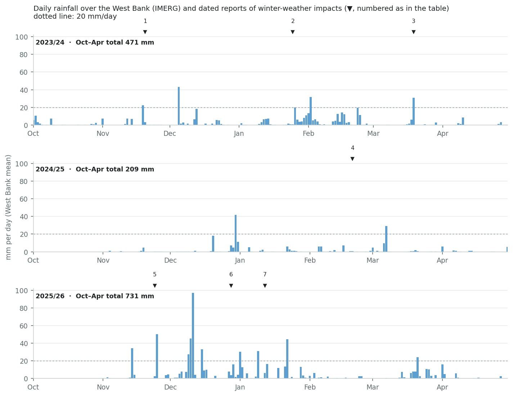
| # | Dates | Hazard | What was reported | IMERG wettest day West Bank | Window total IMERG · ERA5 | ERA5 coldest night · strongest wind | Source |
|---|---|---|---|---|---|---|---|
| 1 | 2023-11-20 to 2023-11-21 | R | Jenin camp: 6 homes and 10 families flooded (about 80 cm of water) where the drainage had been bulldozed. | 22 mm | 26 mm · 33 mm | 13 °C · 7 m/s | WAFA, Nov 2023 |
| 2 | 2024-01-25 to 2024-02-03 | R W | Northern camps: emergency declared, streets impassable, three roads closed; a girl rescued from a submerged vehicle on 2 February. | 32 mm | 104 mm · 70 mm | 5 °C · 6 m/s | WAFA (Civil Defense), Jan–Feb 2024 |
| 3 | 2024-03-19 | X | One person killed by a wall collapse in Beit Imrin (Nablus) during a storm. | 31 mm | 37 mm · 13 mm | 11 °C · 6 m/s | WAFA (Civil Defense), Mar 2024 |
| 4 | 2025-02-20 to 2025-02-25 | C S | Light snow on the evening of 23 February; schools opened late on 23–25 February; no damage reported. | 1 mm | 1 mm · 10 mm | 1 °C · 6 m/s | Times of Israel; WAFA |
| 5 | 2025-11-24 to 2025-11-25 | R F | Overnight flash flooding in the Hebron hills brought down a section of the Barrier. | 50 mm | 53 mm · 10 mm | 13 °C · 4 m/s | Jerusalem Post, Nov 2025 |
| 6 | 2025-12-28 to 2025-12-30 | R F W | At least 66 households (about 300 people) in 18 Bedouin and herding communities had tents, animal shelters or fodder stores damaged or destroyed; the Shelter Cluster counted more than 120 households in 18 communities over December–January. Civil Defense: 115 incidents in 11 hours; one flash-flood drowning (reports differ on whether he was a West Bank resident). | 16 mm | 30 mm · 48 mm | 10 °C · 7 m/s | OCHA HSU #352; Shelter Cluster, Jan 2026 |
| 7 | 2026-01-12 to 2026-01-13 | R F W S | Civil Defense: 65 incidents overnight (55 rescues, 10 fires); about 64 mm in Jerusalem overnight; one person critically injured in a flooded home in East Jerusalem. | 16 mm | 23 mm · 27 mm | 8 °C · 8 m/s | Israel Hayom; Fana (Civil Defense), Jan 2026 |
Hazard: R rain and flooding, F flash flood, S snow, C cold, W wind, X structural collapse.
Notes and method
Weather columns cover the window from the day before the reported start to the reported end: IMERG wettest day averaged over the whole West Bank (a downpour on one hillside is diluted over 5,600 km²); window totals from IMERG and from ERA5; ERA5 lowest daily minimum temperature and highest hourly 10 m wind averaged over the 16 cells (the hill towns are colder and windier). Figures in italics come from Palestinian Authority bodies (the Palestinian Civil Defense, ministries) or the media; the rest are UN, cluster or Red Crescent/IFRC figures.
Before October 2023
Before October 2023: the two large events, and the recurring ones (snow on the hills, heating fires, flash floods). Several figures are counts of rescues or assistance rather than of people affected.
| Dates | Hazard | What was reported | IMERG wettest day West Bank | Window total IMERG · ERA5 | ERA5 coldest night · strongest wind | Source |
|---|---|---|---|---|---|---|
| 2013-01-07 to 2013-01-10 | R F S | Floods. About 1,043 homes damaged in 184 communities, most in the north; 410 people, 26 families and 104 more temporarily displaced; 3 drowned (2 in a flash flood near Anabta on 8 January) and 1 died of burns; more than 260 mm in 48 hours in parts of the north. | 63 mm | 137 mm · 85 mm | 4 °C · 9 m/s | OCHA, 16 Jan 2013; NBC |
| 2013-12-10 to 2013-12-19 | S C R | Storm Alexa. 60–100 cm of snow over 15% of the West Bank; more than 300 herders displaced near Hebron; 281,000 animals died (OCHA/FAO); a dialysis patient died after being cut off for two days. 7,128 Civil Defense operations, including 533 rescues of trapped people; 282 houses damaged; one death in a roof fall, “partly unrelated” to the storm (PA damage assessment, Civil Defense). | 42 mm | 117 mm · 39 mm | 2 °C · 8 m/s | OCHA; PA damage assessment, Feb 2014 |
| 2015-01-06 to 2015-01-10 | S C R | Storm Huda: the Red Crescent assisted 505 families (2,839 people) in the West Bank; no West Bank deaths found. | 43 mm | 69 mm · 46 mm | 1 °C · 9 m/s | IFRC DREF MDRPS010 |
| 2015-02-19 to 2015-02-21 | S | Snow: 215 rescues, 16 road crashes; 80% of Hebron's internal roads closed. Days later, on 25 February, 3 children died in a heater fire in Hebron. | 12 mm | 28 mm · 44 mm | 4 °C · 7 m/s | Ma’an via IMEMC; Gulf News |
| 2018-04-25 to 2018-04-27 | F | A spring Red Sea Trough flood: 2 children drowned in a flooded reservoir in Al Fawwar camp, and a girl herding sheep east of Bethlehem was swept away (police, via media). | 21 mm | 30 mm · 26 mm | 13 °C · 4 m/s | Haaretz; CNN |
| 2020-01-18 to 2020-01-25 | R C | One death in Jerusalem (probably a child in a rain-filled ditch in Beit Hanina on 25 January); the Red Crescent reached 1,076 West Bank families. | 13 mm | 50 mm · 76 mm | 4 °C · 7 m/s | IFRC DREF MDRPS011 |
| 2021-02-17 to 2021-02-18 | S C | Snow: 165 Civil Defense cases, 1 road death; schools, government offices and banks closed. | 25 mm | 38 mm · 24 mm | 5 °C · 10 m/s | WAFA |
| 2022-01-26 to 2022-01-27 | S C | Snow (about 20 cm): 400 Civil Defense incidents, including 15 fires; 2 deaths in a house fire in Adh Dhahiriya. IFRC counted 4 West Bank deaths from heating over the cold spell. | 8 mm | 14 mm · 21 mm | 4 °C · 7 m/s | IFRC DREF MDRPS013; WAFA |
5. What this winter could bring
Gaza
Also in this section: West Bank
In this part: How many storms a winter brings · When the first storm of 20 mm or more comes · How big a week of rain is · What one storm of each kind did last winter · Last winter in numbers · Exposure then and now · Deaths · Rain and reported impact, winter by winter · Storm for storm, before and since October 2023 · What the October forecast implies for October–December · Scenarios for winter 2026/27
The question for planners is what this winter could do. The record cannot answer that with a forecast: there is one well-documented winter, reporting that changed every year, and a population whose exposure keeps changing. What it can do is bound the answer. This section separates the weather (how many storms, how big, how early, and what El Niño does or does not change) from what each kind of storm did last winter, and then uses last winter as two reference points. It ends with the longer record: every winter since 2008/09 on one row, the same sizes of storm before and since October 2023, and three scenarios for this winter scaled from last winter's counts.
How many storms a winter brings
Over the 28 winters of IMERG (1998/99–2025/26), a Gaza winter brought on average 6 storms whose wettest day reached 10 mm (in most winters 4–8), 3 that reached 20 mm (1–4), and a storm of 50 mm or more, like Byron, in 50 per cent of winters. El Niño winters brought slightly more of the smaller storms (7 of 10 mm or more, against 5 in La Niña winters) but not more of the largest: 4 of 8 El Niño winters had a storm of 50 mm or more, against 6 of 14 La Niña winters. Last winter, with 7, 4 and 1, was among the more active.
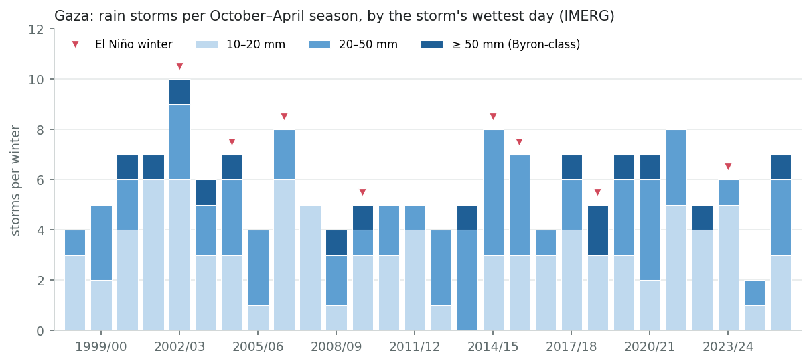
More about this figure
Byron, 8–17 December 2025, counts as one storm (rain from 8 December, the storm proper from 10 December). ERA5 is not used for the largest storms: its 25 km cells smooth them so much that it gives Byron a wettest day of 18 mm, which would not place it among the record's 14 largest storms.When the first storm of 20 mm or more comes
This is where El Niño may matter, though not by much more than chance on eight winters. In 5 of the 8 El Niño winters of the IMERG record, the first storm of 20 mm or more came before 1 December, against 12 of 28 winters overall, and the forecasts put this year's wet anomaly in October–December. Damage does not wait for a big storm, though. In each of the last three winters the first weather damage was reported in mid to late November (13–14 November 2023, 24–25 November 2024, 14–15 November 2025), and in two of them that came before the winter's first 20 mm storm. Last winter's first storm, with 22 mm, damaged about 13,000 tents.
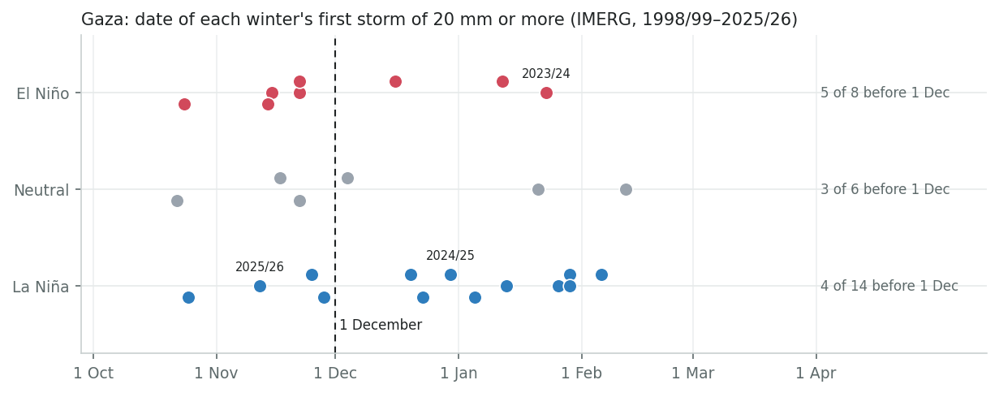
More about this figure
Before 1 December in 5 of 8 El Niño winters and 12 of 28 winters overall. Eight El Niño winters is a small sample: against the other winters the difference is within chance (Fisher exact test, p = 0.23). 2007/08 (La Niña) had no storm of 20 mm or more and has no dot.How big a week of rain is
A 7-day rainfall forecast can be read against the year: in a typical winter the wettest week over Gaza brings about 25 per cent of an average year's rain (IMERG), and one winter in five brings a week of 37 per cent or more (11 of the 28 winters since 1998/99 had a week of 30 per cent or more). The table is a scale for reading a forecast, not a damage predictor.
More detail
IMERG and the Beer Sheva gauge differ in their totals but agree closely on the share; Beer Sheva is 46 km inland and drier than Gaza, so compare its shares, not its millimetres. Byron's week came close to half an average year.
| Wettest 7 days of a winter | IMERG over Gaza | Share of the year | Beer Sheva gauge | Share of the year |
|---|---|---|---|---|
| Average year (for scale) | 308 mm | 100% | 195 mm | 100% |
| Typical winter (median) | 77 mm | 25% | 51 mm | 26% |
| One winter in five | 113 mm | 37% | 74 mm | 38% |
| Wettest in the record | 194 mm 2013/14 | 63% | 137 mm 1994/95 | 70% |
| Storm Byron, 7 days to 15 December 2025 | 142 mm | 46% | — | — |
Highest 7-day running total in each season (August–July), divided by the same source's mean annual total: IMERG 1998/99–2025/26 (area-weighted over Gaza), Beer Sheva gauge 1922/23–2014/15 (seasons with at least 330 days reported).
Notes and method
These are observed scales: a forecast system's 7-day totals carry its own biases, so a forecast compares best as a share of that system's own climatological annual total. Totals for a week ahead are much less certain than for the next two or three days, and a 7-day total says nothing about how much fell in an hour, which is what drives flash floods.
What one storm of each kind did last winter
Each row is one real event, mostly from 2025/26, with how its numbers were counted. None is an average: every row is a single case, and counts made at the sites assessed are floors.
| Kind of storm | Example | Wettest day IMERG · ERA5 | Households affected | Tents and shelters damaged | Deaths | How to read the numbers |
|---|---|---|---|---|---|---|
| First storm of the season of 20 mm or more | 14–15 Nov 2025 | 22 · 11 mm | > 13,000 | ~ 13,000 | — | Gaza-wide count from OCHA (no named source). The Shelter Cluster's tent figure is also 13,000, so the two may be one number. A single case. |
| Byron-class storm (50 mm or more in a day) | Byron, 8–17 Dec 2025 | 66 · 18 mm | ≥ 55,000 | > 42,000 | 12 (Health Cluster: 11 in collapsing buildings, 1 of cold) | Site Management Cluster flood alerts to 16 December, which the cluster says understate the impact; at least 235,000 people. A single case. |
| Later storm of 20–50 mm | 9–10 Jan 2026 | 31 · 9 mm | > 1,300 | — | — | Only the 34 northern sites that raised alerts: a floor, not a Gaza-wide count. The other later 20–50 mm storm (21–22 January, 26 mm) has only an assistance count. |
| Wind and cold with little rain | 12–16 Jan 2026 | 2 · 12 mm | 4,136 | 3,455 | 7 at the sites assessed, including 3 children who died of cold | 106 sites assessed; the cluster later reported about 4,000 more households at 89 further sites, not added here. IMERG saw almost no rain; ERA5 had 12 mm. |
| High tide on the coast | 24–25 Nov 2024 | 3 · 3 mm | ~ 7,000 | 180 | — | Shoreline only, preliminary. Tents: 60 destroyed and 120 damaged at two Deir al Balah sites; more than 600 hit by the tide at Al Qarara. The Government Media Office said about 10,000 tents. |
| Small rain storm | 25–26 Mar 2026 | 13 · 12 mm | about 600 | — | — | Displacement sites; assessments were still under way. |
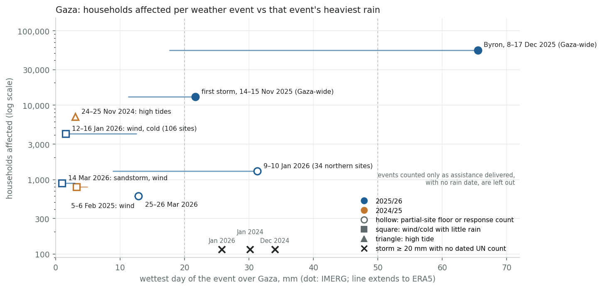
More about this figure
Crosses at the bottom are storms of 20 mm or more since October 2023 for which no dated household count was published. Impacts at the same rainfall differ tenfold between events: exposure, shelter condition and what was counted matter as much as the rain.Last winter in numbers
Last winter's observed totals, split into Byron and everything else. About half of winters bring a storm with a day of 50 mm or more, as Byron had; that held across IMERG's 28 winters, and El Niño did not change it. So the split shows what last winter's counts looked like with and without the one storm that dominated them.
All of these numbers understate last winter. They come from alerts raised by the sites that were reached. In June 2026 the Shelter Cluster's household survey found 71 per cent of households had been flooded at least once; applied to the roughly 355,000 households in displacement sites, that is about 250,000 households. So the alert-based totals probably caught a third or less of the households flooded. Exposure is also higher this winter. About 1.7 million people live in roughly 1,600 sites, against about 1.5 million in about 940 sites last December (counted differently). 65 per cent of households are in tents or makeshift shelters, and more than half of those tents are in poor or very poor condition after a year's use. Last winter was a weak La Niña, not an El Niño. None of this is a forecast.
| Household-impacts | Tents and shelters damaged | Deaths | |
|---|---|---|---|
| Byron alone (8–17 December 2025) | ≥ 55,000 | > 42,000 | 12 (Health Cluster) |
| All other events | about 25,000–45,000 | about 16,500 | — |
| Whole winter | about 80,000–100,000 | about 58,500 | 35–36 |
Household-impacts count a household once for every storm that affected it; the same households were hit repeatedly.
Notes and method
The lower figure sums the per-event counts; the higher one uses the Shelter Cluster's monthly snapshots (December 65,000 families, January 17,221) with the first storm and the February–March events. “All other events” takes Byron's own counts (55,000 households, 42,000 tents) out of both; for December that subtracts a Site Management Cluster count (132 sites) from a Shelter Cluster snapshot (537 sites), two sources with different coverage, so the remainder is approximate. Tents are the sum of the UN and cluster counts by event. Deaths: 35 is the Ministry of Health's storm-related total to 14 January 2026 (relayed by OCHA) plus the child cold deaths it reported afterwards (11 in all); the higher figure uses its other count of 25 collapse deaths for the same period. Neither is UN-verified.
Exposure then and now
| Early winter 2025/26 | September 2026 | |
|---|---|---|
| People in displacement sites | about 1.5 million in 942 sites (early December 2025) | about 1.7 million in 1,591 verified sites |
| Sites and people in flood-prone areas | 761 sites, about 795,000 people (pre-winter mapping) | 989 of 1,764 sites at medium or high risk; 451 sites with about 464,000 people at high risk |
| Households in tents or makeshift shelters | — | 65%; 54% of tents in poor or very poor condition |
| Shelter and site-management funding (2026 Flash Appeal) | — | Shelter 26%, Site Management 2% (18 September) |
Site Management Cluster, Shelter Cluster and IOM figures via OCHA (SitRep 40, December 2025; HSU #353, January 2026; Humanitarian Situation Report, 25 September 2026); Shelter Cluster household survey, June 2026. The 2025 and 2026 site counts use different methods.
Deaths
| Winter | Cold and hypothermia | Building collapse | Source |
|---|---|---|---|
| 2023/24 | none reported by the UN | none reported | reporting on weather deaths was almost absent |
| 2024/25 | at least 8 by 6 January; 6 newborns on 24–25 February | none reported | Ministry of Health; health officials quoted in media, both via OCHA |
| 2025/26 | 11 children (by 27 January) | 25 (mid-December to 14 January) | Ministry of Health via OCHA (its storm-related total was 31 by 14 January: 24 collapse and 7 cold); Byron's 12 storm deaths (11 collapse, 1 cold) were confirmed by the Health Cluster |
No range is given for deaths. Cold deaths followed shelter more than temperature: last winter had only 2 nights at or below 8 °C in ERA5 over Gaza and 11 child deaths; the winter before had 8 such nights. Collapse deaths came with Byron, when rain soaked buildings already damaged in the hostilities. Almost every death count comes from the Ministry of Health in Gaza, and OCHA does not systematically monitor deaths unrelated to the hostilities.
Rain and reported impact, winter by winter
Every winter since 2008/09 on one row. The impact columns are not one series: before October 2023 they count people evacuated, displaced or with damaged homes, in the few storms that OCHA, UNRWA or UNICEF quantified in their situation reports; since, people whose tents and shelters flooded or were damaged, counted by the Site Management Cluster and the Shelter Cluster and published by OCHA. They are set side by side for scale only. Each count and its source is listed in the table of events under the next heading.
| Winter | ENSO | Rain, Oct–Apr | Wettest 7 days | Storms ≥ 20 mm | People reported affected | Tents and shelters damaged | Deaths | What was counted |
|---|---|---|---|---|---|---|---|---|
| Before October 2023: people in houses; counts of people evacuated, displaced or whose homes were damaged | ||||||||
| 2008/09 | La Niña | 297 mm | 74 mm | 3 | not counted | — | — | Houses flooded in Beach and Jabalia camps in October; no count. |
| 2009/10 | El Niño | 276 mm | 122 mm | 2 | 800 | — | — | Wadi Gaza flood, 18–19 January 2010: about 800 residents evacuated. |
| 2010/11 | La Niña | 315 mm | 115 mm | 2 | not counted | — | — | Windstorm in December: farm and fishing losses; no count of people. |
| 2011/12 | La Niña | 238 mm | 61 mm | 1 | not counted | — | — | Floods and a cold wave from late February; no count. |
| 2012/13 | Neutral | 256 mm | 62 mm | 3 | about 110 | — | 1 | January storm: 20 families displaced (OCHA preliminary reports); 530 homes damaged. |
| 2013/14 | Neutral | 479 mm | 194 mm | 5 | 21,000 | — | 2 | Storm Alexa: homes of about 21,000 people damaged; about 10,000 evacuated at the peak. |
| 2014/15 | El Niño | 396 mm | 112 mm | 5 | 501 | — | 4 | About 350 people moved to UNRWA shelters in November; 151 sheltered in January (Storm Huda), when four children died of cold. |
| 2015/16 | El Niño | 324 mm | 73 mm | 4 | 20 | — | — | January rain: 20 people evacuated (UNRWA). |
| 2016/17 | Neutral | 176 mm | 69 mm | 1 | none found | — | — | |
| 2017/18 | La Niña | 330 mm | 96 mm | 3 | not counted | — | — | “Mild rainfall” flooded houses and a sewage pump station in Gaza city in November; no count. |
| 2018/19 | El Niño | 330 mm | 102 mm | 2 | none found | — | — | |
| 2019/20 | Neutral | 414 mm | 107 mm | 4 | about 560 | — | 2 | About 2,000 homes flooded in December (initial reports, not counted as people); about 100 families displaced in January. |
| 2020/21 | La Niña | 293 mm | 74 mm | 5 | not counted | — | — | Crop damage in northern Gaza in December; no count of people. |
| 2021/22 | La Niña | 311 mm | 51 mm | 3 | not counted | — | — | Storm and cold wave in January 2022; no count. |
| 2022/23 | La Niña | 327 mm | 168 mm | 1 | not counted | — | — | Homes and farmland flooded in Deir al Balah governorate in December; no count. |
| Since October 2023: most people in tents and makeshift shelters; counts from partner assessments and site alerts | ||||||||
| 2023/24 | El Niño | 258 mm | 53 mm | 1 | not counted | — | not reported | Tent flooding reported in nine events from 13 November; no counts were published. |
| 2024/25 | La Niña | 115 mm | 48 mm | 1 | ≥ 37,000 | about 710 about 11,500 | at least 14 | Two partial counts: about 7,000 families on the south-west shoreline (high tides, November) and at least 800 at 23 of 1,328 sites (wind and rain, February). |
| 2025/26 | La Niña | 373 mm | 142 mm | 4 | 360,000–470,000 | about 58,500 | 35–36 | Partner assessments and site alerts for 16 events, Gaza-wide for the two largest. A household survey later found 71% of households flooded at least once. |
People are as the source gives them, or households multiplied by 5.6 before October 2023 and 4.8 since, shown as “about” or rounded.
Notes and method
Rain: IMERG, area-weighted over Gaza; the wettest 7 days is the highest 7-day running total of the season; storms as defined above, sized by their wettest day. Household sizes: the average household in Gaza (PCBS census 2017) and people per household in displacement sites (September 2026). A person is counted once for each storm that affected them. 2025/26: the lower figure sums the per-event counts and the higher uses the Shelter Cluster's monthly snapshots, as in “Last winter in numbers”. Tents and shelters: UN and cluster counts. Figures in italics come from the Government Media Office and Palestinian Civil Defense (tents) or the Ministry of Health in Gaza (deaths), relayed by OCHA. Deaths before October 2023 are those UN or Red Cross and Red Crescent reports attribute to the storms. “Not counted” means an impact was reported without a number; “none found” means no weather impact was found in UN reporting for that winter.
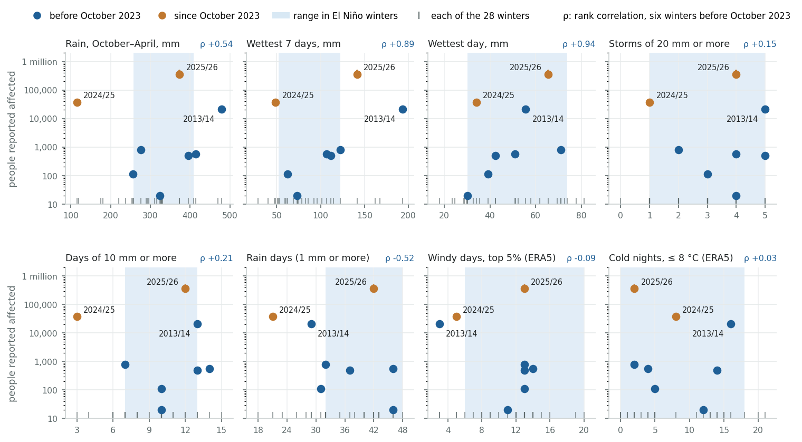
More about this figure
Bar on 2025/26: the two alert-based sums. Windy days: the top 5% of ERA5 winter days. Cold nights: an ERA5 minimum of 8 °C or less.Before October 2023 the counts followed the winter's biggest storm. Across the six counted winters, the wettest day (rank correlation +0.94) and wettest week (+0.89) rank them best, ahead of the season total (+0.54); rain days run the other way (-0.52), and days of 10 mm or more, the number of storms of 20 mm or more, cold nights and windy days show no relation. Six winters is a small sample. That rests on two floods, Wadi Gaza in January 2010 and Storm Alexa in December 2013, and what El Niño adds is rain days, not bigger storms (section 3). Since October 2023 the two counted winters sit far above every earlier one on every measure, and the driest winter of the 28-winter record, 2024/25, has more people reported affected (at least 37,000) than the wettest, 2013/14 (21,000).
Storm for storm, before and since October 2023
How much more does the same weather do now? The record supports a comparison by size of storm, not a rate per millimetre: two counted winters cannot fix a slope, and events with almost no rain were counted in the thousands.
| Storm size wettest day, IMERG | Before October 2023 (2008/09–2022/23, 15 winters) | Since October 2023 (2023/24–2025/26, 3 winters) | ||||
|---|---|---|---|---|---|---|
| Storms | With a reported impact | People counted | Storms | With a reported impact | People counted | |
| 10–20 mm | 42 | 2 | 560 (1) | 9 | 5 | 3,000 (2) |
| 20–50 mm | 35 | 7 | 20–350 (4) | 5 | 5 | 6,200–62,000 (2) |
| 50 mm or more | 9 | 3 | 800–21,000 (2) | 1 | 1 | 235,000 (1) |
Storms over Gaza in IMERG, as defined above.
Notes and method
“With a reported impact”: any entry in the event catalogue, with or without a count, overlaps the storm (from the day before the entry starts to the day it ends). “People counted”: the range across events with a dated count, sized by the wettest day in the event's own dates, with the number of counts in brackets. Counts of assistance delivered, with no rain date, are left out. The event of 12–16 January 2026 (19,200 people) is not in the table: IMERG has 1.5 mm on its wettest day and ERA5 12 mm, so IMERG missed most of its rain. The one count of 10–20 mm before October 2023 is from January 2020; its date is approximate and its wettest day, at 20 mm, sits on the boundary.
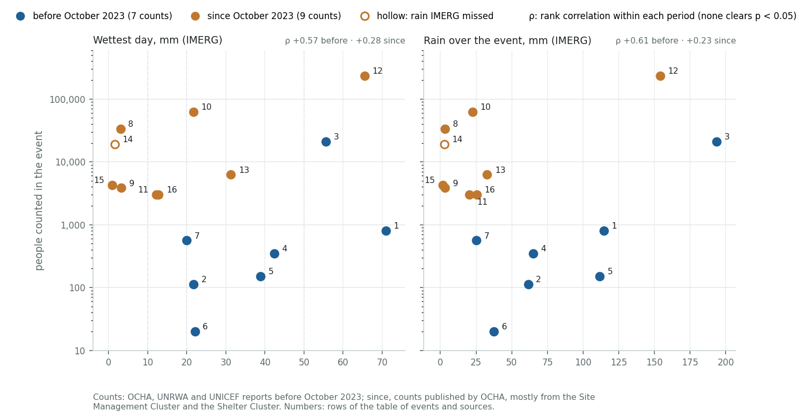
| # | Dates | Hazard | Wettest day | People counted | What the count is | Source |
|---|---|---|---|---|---|---|
| 1 | 18–19 Jan 2010 | rain | 71 mm | 800 | residents evacuated in the Wadi Gaza flood | OCHA Humanitarian Monitor, Jan 2010 |
| 2 | 7–10 Jan 2013 | rain, wind | 22 mm | about 110 | 20 families temporarily displaced | OCHA SitRep, 16 Jan 2013 |
| 3 | 8–15 Dec 2013 | rain, cold | 56 mm | 21,000 | people whose homes were damaged (Storm Alexa) | OCHA SitRep, 16 Dec 2013 |
| 4 | 24–27 Nov 2014 | rain | 42 mm | 350 | people displaced to UNRWA shelters | OCHA Humanitarian Bulletin, Nov 2014 |
| 5 | 6–13 Jan 2015 | rain, cold | 39 mm | 151 | people sheltered in UNRWA centres (Storm Huda) | UNICEF SitRep, 15 Jan 2015 |
| 6 | 24–25 Jan 2016 | rain | 22 mm | 20 | people evacuated by Palestinian Civil Defense | UNRWA Situation Report 128, 29 Jan 2016 |
| 7 | 18 Jan 2020 | rain, cold | 20 mm | about 560 | about 100 families displaced or affected | OCHA Gaza snapshot, Jan 2020 |
| Since October 2023 | ||||||
| 8 | 24–25 Nov 2024 | rain, sea | 3 mm | about 34,000 | about 7,000 families on the south-west shoreline, partner assessments | OCHA HSU #241, 26 Nov 2024 |
| 9 | 5–6 Feb 2025 | rain, wind | 3 mm | about 3,800 | at least 800 families at 23 of 1,328 sites, Site Management Cluster partners | OCHA HSU #263, 11 Feb 2025 |
| 10 | 14–17 Nov 2025 | rain, sea, wind | 22 mm | about 62,000 | more than 13,000 households, Gaza-wide | OCHA HSU #342, 20 Nov 2025 |
| 11 | 25 Nov 2025 | rain | 12 mm | 3,001 | people in 32 designated emergency shelters, Site Management Cluster | OCHA SitRep 33, 28 Nov 2025 |
| 12 | 10–17 Dec 2025 | rain, sea, wind, cold | 66 mm | 235,000 | people in 320 sites and 43 areas, Shelter Cluster (Storm Byron) | OCHA HSU #349, 18 Dec 2025 |
| 13 | 9–10 Jan 2026 | rain | 31 mm | about 6,200 | more than 1,300 households at 34 sites in northern Gaza, Site Management Cluster | OCHA SitRep 61, 13 Jan 2026 |
| 14 | 12–16 Jan 2026 | rain, wind, cold | 2 mm | 19,230 | people at 106 sites, Site Management Cluster (IMERG missed this storm's rain; ERA5 has 12 mm) | OCHA SitRep 62, 16 Jan 2026 |
| 15 | 14 Mar 2026 | rain, wind | 1 mm | about 4,300 | 894 households in displacement sites, Site Management Cluster | OCHA Humanitarian Situation Report, 19 Mar 2026 |
| 16 | 25–26 Mar 2026 | rain | 13 mm | 3,000 | more than 3,000 displaced people, Site Management Cluster | OCHA Humanitarian Situation Report, 2 Apr 2026 |
“About”: the source gives households or families, converted at 5.6 people before October 2023 and 4.8 since.
Notes and method
Wettest day: IMERG over Gaza, from the day before the event to its last day. Events reported without a number, and counts of assistance delivered with no rain date, are in the tables of section 4 but not here.
Two things changed. More storms do harm: 7 of the 35 storms of 20–50 mm left an entry in the event catalogue before October 2023, and all 5 since. Three events with less than 10 mm of rain (high tides and wind), with no counterpart before October 2023, were counted at 3,800–34,000 people each. And each does more: the counts are tens to hundreds of times higher, about 18 times on medians (6,200 people against 350) and, as a scale check allowing for each storm's rain, about 120 times (95 per cent interval about 11 to 1,300, on 16 events). Byron (about 150 mm in IMERG; at least 235,000 people) had 11 times the count of Storm Alexa (about 190 mm; homes of 21,000 people damaged, about 10,000 evacuated), with less rain.
More detail
The scale check is a model fitted to the 16 events with a dated count: one slope on the storm's rain total, plus a step in October 2023. Without the largest storm of each period the step is about 46 times; on geometric means, ignoring rain, about 34. It treats a high-tide event with 3 mm of rain as a very small rainstorm, and takes the storm of 12–16 January 2026 at the 3 mm that IMERG recorded. Before October 2023 only the largest impacts were counted at all (seven counts in 15 winters), which pulls the ratio down; closer counting since pulls it up. Since October 2023 rain alone does not order the counts: across the nine dated counts, people affected and rain are barely related (rank correlation +0.28 with the wettest day), though among the five with a day of 10 mm or more the bigger storms were counted higher (+0.80).
What the multiplier mixes. It is a ratio of reported counts, and three changes are folded into it: how people are sheltered (tents and damaged buildings, many on flood-prone ground, where before they had houses), which is the real change in vulnerability; what is counted (people evacuated or with damaged homes then, people whose tents flooded now); and how closely (occasional situation reports then, daily site alerts last winter). The record cannot separate them, which is why section 4 warns that counts cannot be compared across winters like for like. Read “tens to hundreds of times” as the scale of the change, not a measurement of it.
What the October forecast implies for October–December
SEAS5's October 2026 forecast for October–December is wetter than 41 of its 45 past October forecasts once the trend is taken out (section 1). In the nine years with a forecast in that wettest fifth, ERA5 rain over Gaza in the quarter was 82–202 mm: four were close to the normal 82 mm and five had 119 mm or more. Last year's quarter, with Byron, had 130 mm after an October forecast in the driest fifth. ERA5 flattens the biggest storms: it has the quarters of Storm Alexa and Byron at 88 and 130 mm, where IMERG has 322 and 218 mm. Read where a winter sits, not its millimetres.
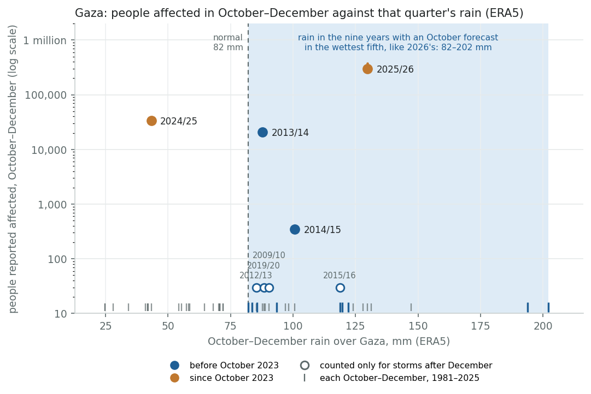
More about this figure
Those years (dark ticks): 1982, 1986, 1994, 1997, 2002, 2006, 2015, 2018, 2023. ERA5 from the team's admin-1 statistics, 1981–2025. 2025/26: the bar reaches the Shelter Cluster's first-storm and December counts.Scenarios for winter 2026/27
These are planning scenarios, not a forecast. Two counted winters cannot support a fitted model. The cases take what last winter's weather did, as it was counted, and scale it to this September's number of people in displacement sites: hazard, times what that hazard did last winter, times exposure now against then. They differ by what dominated last winter's counts, a storm with a day of 50 mm or more, which El Niño has not made more likely and no forecast sees more than days ahead.
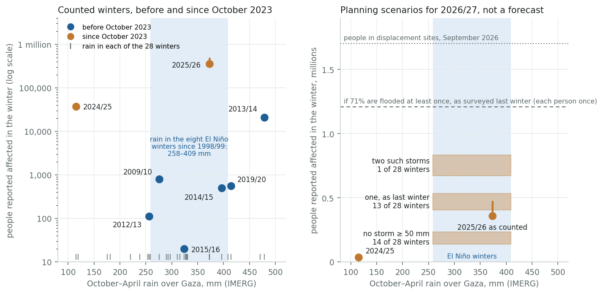
More about this figure
Bar on 2025/26: the two alert-based sums. The boxes span the rain of the eight El Niño winters since 1998/99 (258–409 mm). Dots and boxes count a person once per storm; the two horizontal lines count each person once.| Scenario | How often all winters · El Niño winters | Built from | People-impacts as counted last winter | At this September's exposure × 1.13 |
|---|---|---|---|---|
| No storm of 50 mm or more | 14 of 28 · 4 of 8 | last winter without Byron | about 120,000–210,000 | about 140,000–230,000 |
| One such storm, as last winter | 13 of 28 · 3 of 8 | last winter as counted | about 360,000–470,000 | about 400,000–530,000 |
| Two such storms | 1 of 28 · 1 of 8 2018/19 | last winter plus a second Byron | about 590,000–740,000 | about 670,000–830,000 |
People-impacts count a person once for each storm that affected them.
Notes and method
Each range runs from the sum of the per-event counts (people as reported where a source gives them, 4.8 per household otherwise) to the Shelter Cluster's monthly snapshots (households at 4.8 people), as in “Last winter in numbers”. Byron is taken out or added at the Shelter Cluster's 235,000 people in the lower figures and at the Site Management Cluster's 55,000 households (about 264,000 people) in the higher ones. “How often” counts IMERG winters 1998/99–2025/26. The only winter with two such storms, 2018/19, was before October 2023 and left no entry in the event catalogue. The no-storm case is last winter with Byron taken out: 3 storms of 20 mm or more remain (3 in an average El Niño winter). Exposure: about 1.7 million people in displacement sites in September 2026 against about 1.5 million in early December 2025; the two counts used different methods.
- One winter, one storm. Every figure is last winter's count rescaled, and the two larger cases rest on Byron alone.
- Alert counts are floors. The Shelter Cluster's household survey found 71 per cent of households flooded at least once last winter (June 2026; households in all types of shelter in accessible areas; 83 per cent of those in tents). At the same share, about 1.2 million of the 1.7 million people in displacement sites would be flooded at least once this winter, each counted once. Last winter the alerts caught a third or less of the households the survey found.
- The scaling is crude. It assumes impact rises in step with the number of people in sites. Older tents (54 per cent in poor or very poor condition) would raise it; site preparation, drainage and relocation would lower it. Neither is in the figures.
- A dry winter is not a safe one. 2024/25, the driest winter of the record (115 mm), still had at least 37,000 people reported affected, by high tides and wind. No El Niño winter since 1998/99 has been that dry, but sea surge, wind and cold come whatever the rain.
- Deaths are not scaled. They came from collapsing buildings and cold nights, which do not follow the number of people in sites.
West Bank
Also in this section: Gaza
In this part: How many storms a winter brings · When the first storm of 20 mm or more comes · How big a week of rain is · Snow · Who is exposed, by theme · Deaths · Plans
There is not enough counted impact data for the West Bank to say how many households a winter will affect. What the record can show is how often the weather that has caused harm comes, whether El Niño changes that, how big a week of rain is against the year, and who is exposed now.
How many storms a winter brings
Over the 28 winters of IMERG (1998/99–2025/26), a West Bank winter brought on average 6 storms whose wettest day reached 10 mm (in most winters 4–8), 3 that reached 20 mm (2–5), and a storm of 50 mm or more in 29 per cent of winters. El Niño winters brought slightly more of the smaller storms (7 of 10 mm or more, against 6 in La Niña winters) but not more of the largest: 1 of 8 El Niño winters had a storm of 50 mm or more, against 5 of 14 La Niña winters. Last winter, with 8, 7 and 2, was among the more active.
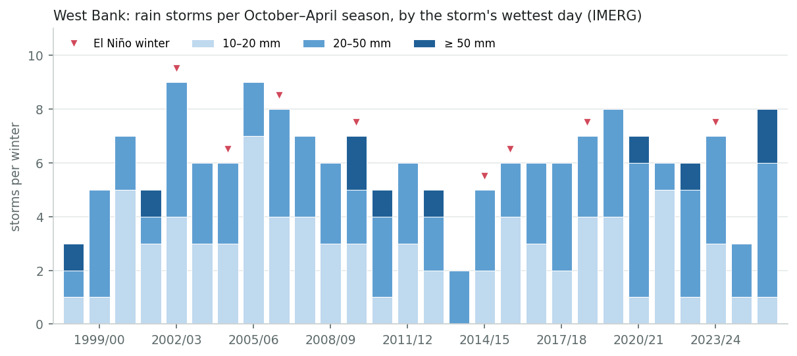
When the first storm of 20 mm or more comes
In 7 of the 8 El Niño winters of the IMERG record, the first storm of 20 mm or more over the West Bank came before 1 December, against 14 of 28 winters overall. Against the other winters that is unlikely to be chance alone (p ≈ 0.03), though eight winters is a small sample. Last winter's most damaging West Bank event, on 28–30 December 2025, came in a December that gave Jerusalem more than 237 mm, its wettest December since 2013 according to the Palestinian Meteorological Department (via Al Jazeera).
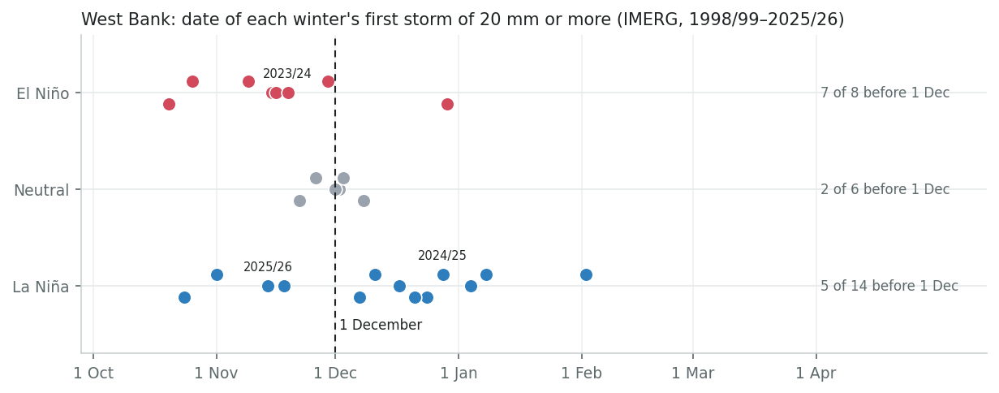
More about this figure
Before 1 December in 7 of 8 El Niño winters and 14 of 28 winters overall. Against the other winters the difference is unlikely to be chance alone (Fisher exact test, p = 0.03), though eight El Niño winters is a small sample.How big a week of rain is
A 7-day rainfall forecast can be read against the year: in a typical winter the wettest week over the West Bank brings about 19 per cent of an average year's rain (IMERG), and one winter in five brings a week of 30 per cent or more. The table is a scale for reading a forecast, not a damage predictor.
More detail
The Jerusalem gauge, a single hill-top point whose last complete season is 2013/14, runs a few points higher on every rung than the IMERG area average: compare the IMERG column with an area forecast and the gauge column with a point. Byron's week, half an average year and the wettest week in IMERG's record, had no impact attributed to it in public reporting; the second-wettest, 7–13 January 2013 (166 mm, about 40 per cent of a year), brought the largest flood event in this page's record, with more than 260 mm in 48 hours locally in the north.
| Wettest 7 days of a winter | IMERG over the West Bank | Share of the year | Jerusalem gauge | Share of the year |
|---|---|---|---|---|
| Average year (for scale) | 424 mm | 100% | 515 mm | 100% |
| Typical winter (median) | 82 mm | 19% | 119 mm | 23% |
| One winter in five | 125 mm | 30% | 175 mm | 34% |
| Wettest in the record | 208 mm 2025/26 | 49% | 264 mm 1941/42 | 51% |
| Storm Byron, 7 days to 15 December 2025 | 208 mm | 49% | — | — |
Highest 7-day running total in each season (August–July), divided by the same source's mean annual total: IMERG 1998/99–2025/26 (area-weighted over the West Bank), Jerusalem gauge 1909/10–2013/14 (seasons with at least 330 days reported).
Notes and method
These are observed scales: a forecast system's 7-day totals carry its own biases, so a forecast compares best as a share of that system's own climatological annual total. Totals for a week ahead are much less certain than for the next two or three days, and a 7-day total says nothing about how much fell in an hour, which is what drives flash floods.
Snow
| Winter | Snow with reported impacts | ENSO phase (DJF) |
|---|---|---|
| 1991/92 | February 1992: heavy snow across the hills (Jerusalem's wettest winter on record) | El Niño, after Pinatubo |
| 2012/13 | 9–10 January 2013, at the end of the floods | neutral |
| 2013/14 | Storm Alexa, 12–14 December 2013: 60–100 cm, 15% of the West Bank snow-covered | neutral |
| 2014/15 | January (Storm Huda) and 19–21 February 2015: 215 rescues, Hebron's roads closed | weak El Niño |
| 2020/21 | 17–18 February 2021: 165 Civil Defense cases, 1 road death | La Niña |
| 2021/22 | 26–27 January 2022: 20 cm, 400 incidents, 2 deaths in a house fire | La Niña |
| 2024/25, 2025/26 | light snow only (February 2025, January 2026) | La Niña |
Snow with impacts has come in every ENSO phase; over the last 15 years, more often in neutral and La Niña winters than in El Niño ones. The Israel Meteorological Service finds a slight, non-significant tilt towards more Jerusalem snow days in strong El Niño winters, from seven cases. With every forecast pointing to a warm winter, a snowstorm like Alexa is less likely than usual this year but not ruled out. The ERA5 cells are too smooth to see the hill-town snow, so this page does not estimate snow odds.
Who is exposed, by theme
Three groups carry most of the West Bank's winter risk, and each meets the weather in a different way: camps and towns through drainage, power and roads; herding communities through shelters, animals and fodder; farmers through their crops. Since 2023, displacement and losses in all three have been driven mainly by Israeli forces' operations, settler violence and access restrictions (OCHA); the figures below keep those causes apart from the weather.
Refugee camps and towns
Going into this winter:
- About 34,000 Palestine refugees remain forcibly displaced from the Jenin, Tulkarm and Nur Shams camps since the Israeli forces' operation in the northern West Bank that began in January 2025 (UNRWA, 10 September 2026). None have returned; Israeli military closure orders ran to 20 August 2026 for Jenin camp and 30 September 2026 for Tulkarm and Nur Shams, and their status since was not found. Over 80 per cent of those displaced now rent (UNRWA, September 2026), and only 8 per cent could pay rent regularly in mid-2025 (Shelter Cluster); a May 2025 assessment had found just over half renting, 30 per cent staying with relatives and 20 per cent in public shelters or other temporary places (OCHA). Most of the about 4,000 displaced from El Far'a refugee camp returned in February 2025.
- Satellite imagery from January–February 2026 shows 637 structures destroyed and 1,521 damaged or destroyed in total across the three camps: about half of all structures in Jenin and Nur Shams camps and 37 per cent in Tulkarm camp (UNOSAT, preliminary). Water, sewage and stormwater infrastructure in the camps was bulldozed during the operations (OCHA).
- Elsewhere, towns partly enclosed by the Barrier drain badly in heavy rain. In the WASH Cluster's 2022 community inventory, 167 of 845 communities reported flooding at least once in the previous three years (10,173 households, most of them in Jerusalem governorate).
| Event | What winter weather did | Source |
|---|---|---|
| 7–10 January 2013, floods | Qalqiliya and Tulkarm cities and Kafr Aqab flooded because the Barrier obstructed their drainage, and Hebron's Old City because of roadblocks placed by Israeli forces. Villages such as Kafr Qaddum were cut off when the only road they are permitted to use under Israeli access restrictions flooded. Across the Occupied Palestinian Territory, prolonged power cuts, flooded roads and closed schools. 618 homes damaged in 91 communities of the northern West Bank. | OCHA, 16 Jan 2013 |
| 11–14 December 2013, Storm Alexa | Several floods and house fires reported in the 19 refugee camps, many of them left without adequate power; 80% of Ramallah city without power on the first day; most schools closed. A girl in Bethlehem died after an ambulance could not reach her through the snow for two days. | OCHA, 14 and 16 Dec 2013 |
| January 2024, rain | Rain on the bulldozed streets of the northern camps showed the scale of the destruction: streets turned to mud and potholes, hard for vehicles (no numbers). | WAFA, 27 Jan 2024 |
| 29 December 2025, storm | Civil Defense evacuated flooded homes south of Hebron and pumped water from homes, a kindergarten and two nurseries; road collapses and blocked rainwater drains. 115 Civil Defense incidents in 11 hours across several governorates (relayed by OCHA). | OCHA HSU #352; Al Jazeera Arabic (Civil Defense), 29 Dec 2025 |
No numbers on camp flooding, power cuts or service interruptions from weather were found for any winter since 2023.
Notes and method
Those displaced from the northern West Bank camps now mostly rent, which suggests their winter risks lie more in heating costs and the condition of rented housing than in flooding (in January 2026 about 100 Tulkarm families were living in buildings without doors or windows, Al Jazeera).
Herding communities in the Jordan Valley and Area C
Going into this winter:
- The Shelter Cluster's Area C dataset covers 315 communities (215,703 people) with 30,173 residential shelters, of which 2,242 need rehabilitation (January 2026). Bedouin and herding communities are a subset; 42 of the listed communities are marked as forcibly displaced and no longer existing. No count of people in tents was found.
- Displacement by Israeli settler attacks and related access restrictions, separate from the weather: 130 communities fully or partly displaced and more than 6,400 people since January 2023, over 2,500 of them in 2026, mostly in Bedouin and herding communities in Area C (OCHA, 4 September 2026). Ras Ein al 'Auja near Jericho, about 600 people, was fully displaced in January 2026.
- After the 2024/25 drought (33 per cent of the mean rainfall at Jericho by early March 2025), 16 per cent of livestock-keeping households in Area C reported animal deaths from malnutrition, drought or lack of feed, and 81–90 per cent of livestock keepers cited the cost of feed as a problem (FAO, survey of July–August 2025). The survey does not separate drought from pasture lost to settler violence: 65 per cent of Area C livestock keepers reported difficulty reaching pasture.
| Event | What winter weather did | Source |
|---|---|---|
| 7–10 January 2013, floods | Hundreds of residential tents and shelters in Area C herding communities damaged; a sharp rise in livestock deaths and disease, made worse by the destruction of cereal crops grown for feed, which forced herders to buy fodder. Emergency funds later paid to rehabilitate 272 animal sheds in 66 communities. | OCHA Humanitarian Monitor, Feb 2013 |
| 11–14 December 2013, Storm Alexa | At least 300 people displaced in Bedouin and herding communities in Hebron governorate; 55,760 m² of animal sheds damaged, mainly in the southern West Bank (MoA); 281,000 animals died in the West Bank, most of them poultry (MoA and FAO). In the Jordan Valley, demolitions by the Israeli authorities the day before the storm had displaced 41 people (not weather-related). | OCHA, 16 Dec 2013; Humanitarian Bulletin, Dec 2013; OCHA PoC, 23 Dec 2013 |
| 28–30 December 2025, storm | At least 66 households (about 300 people) in 18 mainly Bedouin and herding communities had tents, livestock barracks, fodder stores or animal shelters damaged or destroyed; in several cases structures recently rebuilt after settler attacks were damaged again. The Shelter Cluster counted more than 120 households in 18 communities affected by the winter storms of December–January; its count cannot be split by storm and probably overlaps OCHA's. | OCHA HSU #352; Shelter Cluster |
No count of livestock killed by cold, floods or snow was found for any winter since 2015.
Notes and method
Lambing falls in mid-winter; OCHA flagged the risk to lambs during Alexa, but no lamb losses were measured. No herding community is known to have been displaced by weather alone beyond a few days; long-term displacement has been driven by settler attacks, demolitions and access restrictions.
Farming: field crops, greenhouses, trees and rangeland
- Field crops as a whole (about 198,000 dunums) are 95 per cent rainfed and tree crops (about 641,000 dunums) 91 per cent rainfed; Jericho and Al Aghwar is the exception, where about 96 per cent of the tree area is irrigated (the valley grows dates, citrus and bananas). Section 6 shows how these follow the winter's rain and El Niño.
- Greenhouses: 28,743 dunums of plastic houses, 77 per cent of them in Jenin, Tulkarm and Tubas and another 8 per cent in Jericho; vegetables as a whole are only 13 per cent rainfed. Their winter hazards are wind, snow load, frost and flooding, not the season's rainfall.
- Rangeland: about 2 million dunums, of which Palestinians had access to about 621,000 in 2014 (PA figures); settler violence and displacement have restricted it further since (no updated figure).
| Event | What winter weather did | Source |
|---|---|---|
| 7–10 January 2013, floods | More than 4,200 greenhouses damaged across the West Bank and Gaza (MoA), with damage to greenhouses and open fields particularly high in the northern West Bank; more than 100,000 chickens dead in the northern West Bank; US$16.5 million of agricultural damage (MoA, West Bank and Gaza). | OCHA, 16 Jan and Mar 2013 |
| 11–14 December 2013, Storm Alexa | West Bank production losses of about US$7 million in greenhouses, US$4.6 million in open fields and US$3 million in sheep milk (MoA and FAO, via OCHA); grape production in Hebron, Dura, Yatta and Bethlehem expected to be lost for two years (PA damage assessment). | OCHA Humanitarian Bulletin; PA damage assessment, Feb 2014 |
| 17–18 January 2022, frost | About 6,000 of 80,000 dunums of open-field crops and about 600 of 32,000 dunums of protected crops damaged, 60% of the damage in the Jordan Valley (MoA). | WAFA, 19 Jan 2022 |
PCBS and MoA Agricultural Census 2021 (areas, irrigation, greenhouses); PA data in the Alexa damage assessment (rangeland). No storm damage to greenhouses or orchards was found reported for 2025/26.
In the three event tables, italics mark impact figures from Palestinian Authority bodies (ministries, the Palestinian Civil Defense) or the media, including when the UN relays them.
Deaths
| Cause | Events |
|---|---|
| Flash floods and drowning | 8 January 2013, Anabta (2); 25–27 April 2018, Al Fawwar camp and east of Bethlehem (3, a spring storm); 24–25 January 2020, Jerusalem (1); 29 December 2025 (1, place of residence disputed) |
| House fires and heating | 25 February 2015, Hebron (3 children); January–February 2022 (4, IFRC), including 2 in a house fire in Adh Dhahiriya |
| Collapse and snow | 19 March 2024, wall collapse in Beit Imrin (1); December 2013, a roof fall and a dialysis patient cut off by snow (2); February 2021, a road crash in snow (1) |
Attribution is mixed (UN, IFRC, Civil Defense via the media), so the rows should not be summed.
Plans
No 2026/27 winterization plan written for the West Bank was found by 2 October 2026. The West Bank's winter lines sit inside the calendar-2026 appeals:
- the Flash Appeal's West Bank shelter response: 62,900 people, US$28.4 million, including weatherproofing, insulation, heaters and blankets;
- UNRWA's West Bank shelter and household items: 11,500 households, US$21.9 million.
UNICEF's Winterization Plan 2026–2027 (17 September 2026) seeks US$97.5 million for 540,000 children in Gaza and the West Bank; its costed lines are almost all for Gaza. A US$1.0 million oPt Humanitarian Fund allocation for West Bank shelter gaps, in Area C and for displaced people, was approved in January 2026. Funding is reported only for the Occupied Palestinian Territory as a whole.
6. Farming in the West Bank: crop years after El Niño winters
In this section: Spring greenness, zone by zone · Field crops, trees and rangeland · Harvests after El Niño winters · Rainfed cereals and pulses · Olives · Spring vegetation since 1982 · Every strong El Niño crop year since 1983 · What the record suggests for 2026/27
Most West Bank farming depends on the winter rain. The West Bank is commonly divided into four agro-ecological zones (Dudeen 2001): the Central Highlands from Jenin to Hebron, almost all rainfed and mostly under olives, grapes and other fruit trees, with winter cereals and pulses on the rest; the semi-coastal plain in the northwest, the wettest zone, with rainfed field crops and irrigated vegetables; the Eastern Slopes, a dry transition zone of marginal rainfed barley, wheat and olives and spring grazing; and the Jordan Valley, which gets 100–200 mm and is farmed on springs and groundwater. Crop statistics are published by governorate, and the Eastern Slopes cut across the highland governorates, so the yield figures below use three zones and the Eastern Slopes appear through satellite vegetation data.
One convention throughout this section: a crop year is named after its harvest and follows the winter before it. This winter, 2026/27, will shape the cereal and pulse harvest of May–June 2027, spring grazing in 2027 and the olive harvest of October–November 2027. The olive harvest that starts this month was set by last winter and by the size of the previous crop.
| Zone | Governorates | What it grows | Share of West Bank wheat and barley area | Share of olives pressed | Rain vs Niño3.4, r | El Niño winters in the wettest third | Spring greenness after El Niño winters |
|---|---|---|---|---|---|---|---|
| Semi-coastal plain (northwest) | Jenin, Tulkarm, Qalqiliya | About 600 mm a year. Rainfed cereals and pulses; more than half the cultivated land irrigated in part (vegetables, potatoes, citrus). The governorates also take in hill country with olives. | 29% | 42% | +0.56 | 9 of 14 | 6 of 8 above normal median +3% |
| Central Highlands | Nablus, Salfit, Ramallah & Al-Bireh, Jerusalem, Bethlehem, Hebron | About 400 mm a year on average. 95% rainfed: 60% olives, grapes, almonds and other fruit trees, 35% winter cereals and pulses. The governorates also take in the Eastern Slopes (250–300 mm; spring grazing, some rainfed barley and wheat). | 52% | 46% | +0.60 | 9 of 14 | 8 of 8 above normal median +8% |
| Jordan Valley | Jericho & Al Aghwar, Tubas | 100–200 mm a year. The main irrigated area: off-season vegetables, dates, bananas and citrus, on springs and groundwater. Herding on the margins. | 19% | — | +0.51 | 9 of 14 | 6 of 8 above normal median +12% |
Wheat and barley area: PCBS Agricultural Census 2021, by governorate.
Notes and method
The Jordan Valley's share is almost all Tubas governorate (which PCBS reports with the northern valleys), much of it on the governorate's hills and plains above the valley floor. Olives pressed: PCBS Olive Presses Survey, share of all olives pressed in the Occupied Palestinian Territory, 2003–2019 mean (the West Bank as a whole pressed 89%). PCBS merges Jenin and Tubas, so Tubas's olives sit in the semi-coastal row; Jericho has no presses; Jerusalem is reported only from 2008 and left out (about 3% of the highland pressings since). Rain: October–April ERA5 over each zone's governorates, 1979/80–2025/26, against December–February Niño3.4 (pinned series). Spring greenness: MODIS NDVI, February–April, 2001–2026, against the 2001–2020 normal (see below). The zones share ERA5 cells and their winters move together (r ≥ 0.89 between any two), so ERA5 cannot tell their El Niño responses apart: on it they are the same. Its 25 km cells also smooth the steep rain gradient (its Jordan Valley mean is about 300 mm, against 100–200 mm on the valley floor), so only anomalies are used.
Spring greenness, zone by zone
The one yearly measure available for every zone is satellite greenness. In the spring after an El Niño winter, it was above normal in 6 of 8 years in the semi-coastal plain, 8 of 8 years in the Central Highlands, 6 of 8 years in the Jordan Valley; after La Niña winters, in 5 of 12, 4 of 12, 3 of 12. Several of those El Niño springs were only slightly above normal.
More detail
Most El Niño winters of the MODIS years brought close to normal rain (percentage above or below the 1991–2020 mean across the West Bank: 2002/03 +38, 2004/05 −2, 2006/07 −5, 2009/10 −10, 2014/15 +5, 2015/16 +4, 2018/19 +44, 2023/24 +2). The drier the zone, the larger the swing: the median El Niño spring was 3 per cent above normal in the semi-coastal plain, 8 per cent above normal in the Central Highlands, 12 per cent above normal in the Jordan Valley, though the drier zones also vary more in every year (standard deviation 5 per cent, 9 per cent, 13 per cent in the same order). The semi-coastal plain, the wettest zone and partly irrigated, has the weakest link to El Niño: rain there is less often what limits growth.
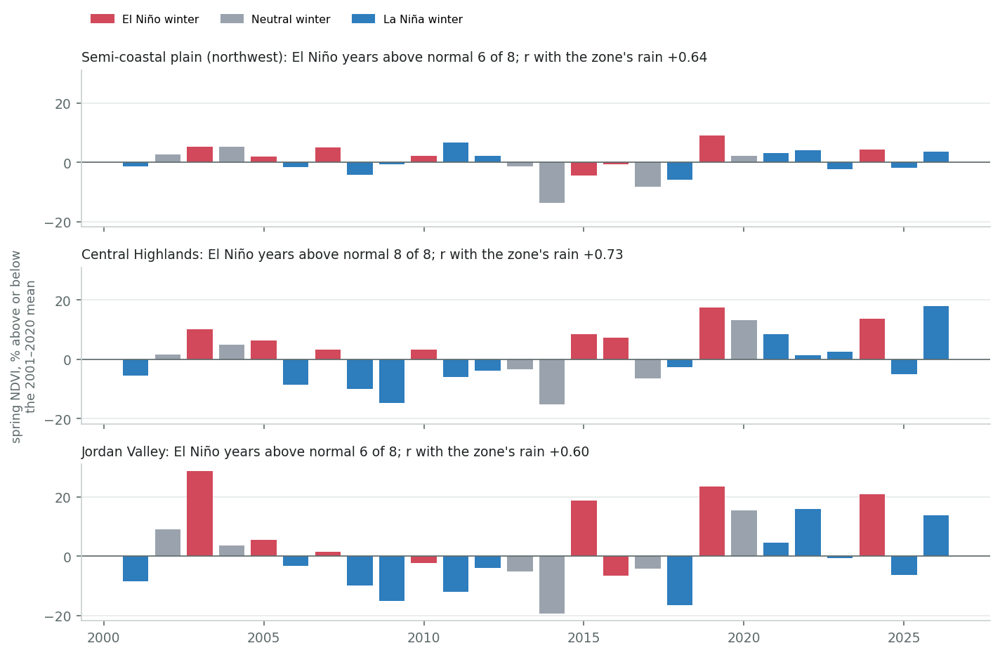
More about this figure
Colour: ENSO phase of the winter before. Correlations with the zone's rain and with Niño3.4: Semi-coastal plain (northwest) r = +0.64 and +0.26 (p 0.208); Central Highlands r = +0.73 and +0.59 (p 0.002); Jordan Valley r = +0.60 and +0.45 (p 0.022) (26 springs). The Jordan Valley's governorates take in the dry eastern slopes as well as irrigated land, so its swings are mostly rangeland. Greenness has risen since 2001 in the Highlands and the Jordan Valley (+4% a decade, +3% a decade). With the trend removed the correlations are much the same, and El Niño springs above normal number 6, 8, 6 of 8 (La Niña: 5, 2, 3 of 12), in the order above.Field crops, trees and rangeland
Split by land cover instead of by zone, the same satellite record separates the crops that ride out a dry year from those that do not. Tree cover (denser orchards, groves and woodland) has the weakest link to the winter's rain and, in the hills and on the plain, the smallest swings; its El Niño springs were above normal in 8 of 8 years, but only slightly. Cropland and the shrubland and grassland that cover most of the West Bank (rangeland and sparse olive groves) swing more and follow El Niño about equally.
More detail
On the semi-coastal plain no group has a significant link to El Niño, and its cropland, much of it irrigated, has none at all. In the Jordan Valley, every group swings widely, and the valley's cropland and rangeland had the largest El Niño and La Niña departures.
| Land cover | Where | MODIS pixels | r with rain | r with Niño3.4 | El Niño springs above normal | La Niña springs above normal | Year-to-year spread |
|---|---|---|---|---|---|---|---|
| Cropland 8% of the West Bank | whole West Bank | 5,661 | +0.68 | +0.49 p 0.011 | 6 of 8 median +5% | 4 of 12 median −2% | ±7% |
| semi-coastal plain | 1,845 | +0.30 | +0.10 p 0.610 | 4 of 8 median 0% | 4 of 12 median −2% | ±5% | |
| Central Highlands | 2,039 | +0.59 | +0.54 p 0.004 | 7 of 8 median +8% | 5 of 12 median −3% | ±11% | |
| Jordan Valley | 1,777 | +0.66 | +0.42 p 0.032 | 5 of 8 median +11% | 5 of 12 median −5% | ±11% | |
| Tree cover 6% of the West Bank | whole West Bank | 2,235 | +0.39 | +0.34 p 0.086 | 8 of 8 median +2% | 6 of 12 median 0% | ±6% |
| semi-coastal plain | 817 | +0.38 | +0.18 p 0.372 | 7 of 8 median +1% | 7 of 12 median +1% | ±4% | |
| Central Highlands | 733 | +0.42 | +0.43 p 0.029 | 7 of 8 median +2% | 7 of 12 median +1% | ±5% | |
| Jordan Valley | 685 | +0.29 | +0.28 p 0.169 | 6 of 8 median +9% | 5 of 12 median −4% | ±13% | |
| Shrubland and grassland 59% of the West Bank | whole West Bank | 59,191 | +0.69 | +0.51 p 0.008 | 8 of 8 median +5% | 4 of 12 median −3% | ±9% |
| semi-coastal plain | 11,179 | +0.61 | +0.29 p 0.158 | 7 of 8 median +4% | 6 of 12 median 0% | ±6% | |
| Central Highlands | 39,971 | +0.66 | +0.54 p 0.004 | 8 of 8 median +7% | 4 of 12 median −3% | ±10% | |
| Jordan Valley | 8,041 | +0.69 | +0.42 p 0.032 | 6 of 8 median +11% | 4 of 12 median −7% | ±15% |
Spring (February–April) MODIS NDVI as above, averaged over the 250 m pixels that are at least 60% one land-cover group in ESA WorldCover 2021 (10 m): cropland (class 40), tree cover (10), shrubland and grassland (20, 30).
Notes and method
Built-up and bare land are left out. Shares of the West Bank are of all land, including built-up and bare. r with rain: against the October–April ERA5 total over the whole West Bank. “Year-to-year spread” is the standard deviation of the spring anomaly, 2001–2026. The 2021 map is applied to every year. WorldCover has no orchard class, and how an olive grove is classed depends on how dense its canopy is, so the shrubland and grassland group mixes rangeland with sparse groves, and tree cover is the denser orchards, groves and woodland. Requiring 60% of a pixel favours large blocks: the cropland rows describe the plains and valley fields more than the fragmented terraces. NDVI is used without quality or snow masking, so February composites in snowy springs (2015, 2021, 2022) may read low; 2023 and 2026 miss one and two composites. Greenhouses cannot be told apart in these maps.
Harvests after El Niño winters
Cereal yields are published only for the Occupied Palestinian Territory as a whole (the West Bank and Gaza together), but the West Bank holds 90 per cent of its wheat and barley area and presses 89 per cent of its olives. Rainfed wheat and barley yields were above trend in 7 of 9 crop years after El Niño winters, against 3 of 11 after La Niña winters. The four worst harvests since 1994, 1999 (60 per cent below trend), 2008 (35 per cent), 2011 (20 per cent), 2001 (17 per cent), all followed La Niña winters. El Niño years were not bumper years: their median, 7 per cent above trend, is close to that of neutral years (5 per cent above trend). What an El Niño winter has done is make a bad cereal year less likely.
More detail
The longer vegetation record, which also covers pasture, tells the same story: spring vegetation was above its median in 10 of 14 El Niño years on cropland and 12 of 14 on all land, against 9 of 20 and 4 of 20 after La Niña winters. Olives show no clear El Niño signal (3 of 6 El Niño years above what the previous crop predicts, 5 of 10 La Niña years; r with Niño3.4 +0.14).
These are small samples. With 9 and 11 years, the true share of good cereal years could plausibly lie anywhere from 45 per cent to 94 per cent after El Niño winters and from 10 per cent to 57 per cent after La Niña winters (95 per cent intervals), and the El Niño–La Niña contrast is only borderline significant (Fisher exact test p = 0.07; Mann–Whitney p = 0.08). The clearest part is the bad tail: no El Niño year fell more than 15 per cent below trend, against 4 of 11 La Niña years. The correlation with the season's rain also leans on one year: without 1999 it drops from +0.41 to +0.19.
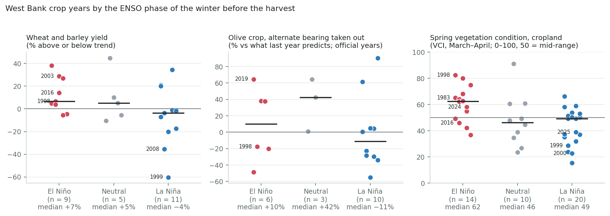
More about this figure
Left: wheat and barley, the mean of their yields' percentages above or below a log-linear trend, official FAOSTAT figures only (1994–2021, 25 years). Middle: olive production (FAOSTAT) after taking out alternate bearing. Right: the NOAA STAR Vegetation Condition Index over West Bank cropland, mean of March and April (1982–2026; no data for 2004).| Measure | Years | El Niño | Neutral | La Niña | r with rain | r with Niño3.4 |
|---|---|---|---|---|---|---|
| Wheat and barley yield years above trend | 1994–2021 | 7 of 9 median +7% | 3 of 5 median +5% | 3 of 11 median −4% | +0.41 p 0.039 | +0.35 p 0.082 |
| Lentil yield years above trend | 1994–2021 (19 official years) | 5 of 6 median +30% | 2 of 4 median +22% | 3 of 9 median −18% | +0.80 p <0.001 | +0.53 p 0.018 |
| Olive crop, alternate bearing out years above what the previous crop predicts | 1995–2021 (19 official pairs) | 3 of 6 median +10% | 3 of 3 median +42% | 5 of 10 median −11% | +0.32 p 0.183 | +0.14 p 0.575 |
| Spring VCI, cropland years above the record's median | 1982–2026 | 10 of 14 median +13 pts | 3 of 10 median −3 pts | 9 of 20 median 0 pts | +0.57 p <0.001 | +0.43 p 0.004 |
| Spring VCI, all land years above the record's median | 1982–2026 | 12 of 14 median +14 pts | 6 of 10 median +1 pts | 4 of 20 median −9 pts | +0.66 p <0.001 | +0.55 p <0.001 |
| Spring NDVI, whole West Bank years above the 2001–2020 normal | 2001–2026 | 8 of 8 median +6% | 3 of 6 median 0% | 4 of 12 median −4% | +0.73 p <0.001 | +0.55 p 0.004 |
“r with rain”: against the October–April ERA5 total over the West Bank before the harvest; “r with Niño3.4”: against December–February Niño3.4 of that winter.
Notes and method
Medians are percentages above or below trend or normal, or VCI points above or below the record's median. All of these years fall after 1979, inside the period in which the El Niño link to West Bank rain exists.
Rainfed cereals and pulses
Wheat and barley are sown in November–December and harvested in May–June. In the West Bank, 98 per cent of their area is rainfed (2021 census); about a third of it is in Hebron governorate, on the southern hills and the edge of the eastern slopes, and more than a quarter in Jenin. Yields follow the winter's rain, loosely, and a wet winter is no guarantee.
More detail
The two worst harvests followed the two driest winters with official figures (1998/99 and 2007/08), but two other dry winters (2013/14 and 2016/17) have no official yield, and two poor harvests (2001, 2011) followed winters that were only somewhat dry or near normal. The total is not everything: when the rain comes, frost, and heat during grain filling also matter, so a wet winter is no guarantee (2019, after a very wet El Niño winter, was slightly below trend) and a dry one can still yield well (2000).
Lentils, the pulse with the most official figures (19 years), follow the winter's rain more closely than the cereals (r = +0.80, with Niño3.4 +0.53; 5 of 6 El Niño years above trend, 3 of 9 La Niña years). Chickpeas show no clear link (r = +0.28 with rain).
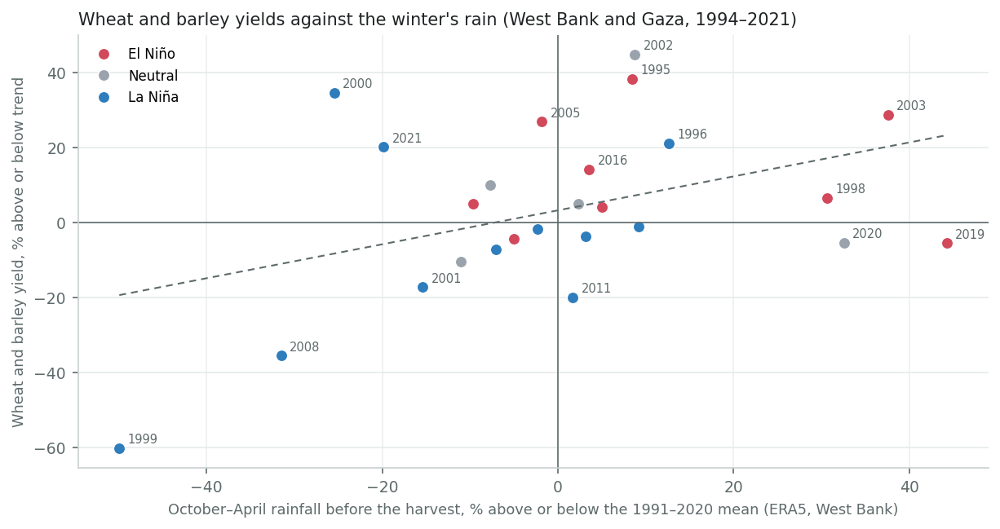
More about this figure
FAOSTAT repeats its 2013 figures as 2014 and gives only estimated or imputed figures for 2009 and 2017; those years are left out. Harvested area halves in FAOSTAT from 2010 (for wheat and barley as for olives), which yields absorb: a step at 2010 changes none of the counts.Which part of the winter matters (four windows tried, so read loosely): yields correlate with rain in Oct–Dec r = +0.44, Nov–Jan r = +0.65, Jan–Mar r = +0.18, Feb–Apr r = +0.09.
Notes and method
The early part of the season, around sowing and establishment, carries the link, and that is the part the forecasts favour as wet.
Olives
Olives are the West Bank's main tree crop and almost all rainfed. The crop swings by a factor of two to five from one year to the next because trees alternate heavy and light crops (alternate bearing), and that cycle, not the winter, sets most of the change. With it taken out, national production shows no clear link to El Niño (official years only). By zone (olives pressed, PCBS, 2003–2019), bigger crops lean weakly towards wetter winters, more in the semi-coastal plain than in the highlands, but the lean rests largely on 2019, a very wet winter followed by the largest crop of the period, and it does not carry through to El Niño: in these years El Niño winters were not reliably wet (2009/10 was below average).
Since October 2023, access has shaped the harvest as much as the weather. Between 1 and 27 October 2025 OCHA documented 126 olive-harvest-related attacks by Israeli settlers, against 110 in the same period of 2024 and 30–46 in the same window of 2020–2023, with more than 4,000 trees and saplings vandalized. The 2025 harvest, after a winter (2024/25) tied with 1998/99 as the driest in ERA5's record, was among the smallest in years: early estimates of 7,000–8,000 tonnes of oil, against 27,300 tonnes in 2024 and an average of about 22,500 (MAS, as reported by Al Jazeera). 2024 was a large crop, so alternate bearing alone would have made 2025 smaller; bearing, drought and access cannot be separated in these figures.
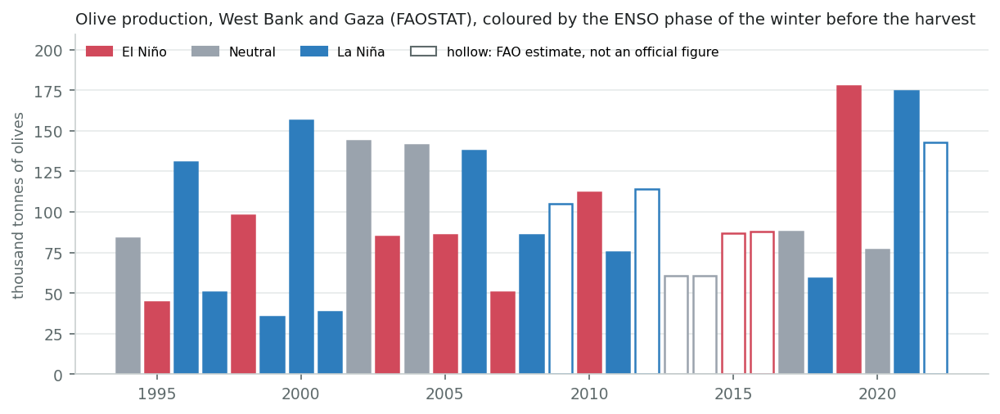
More about this figure
Hollow bars are FAO estimates, left out of the alternate-bearing model and the tables. FAOSTAT's harvested area halves from 2010 without a matching change in production, so production is used rather than yield.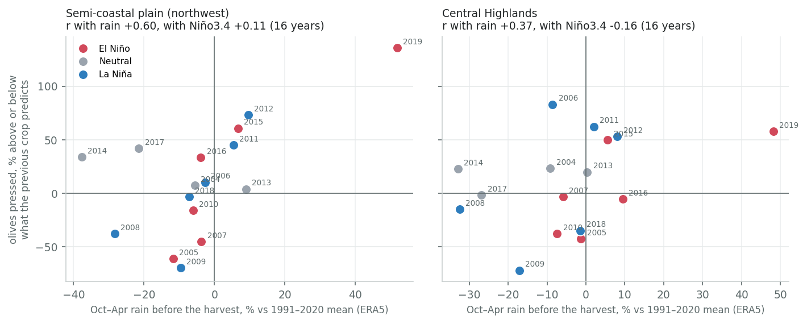
More about this figure
The survey counts olives brought to presses, not table olives or olives pressed at home. Semi-coastal plain (northwest): Spearman ρ = +0.54; Pearson r without 2019 = +0.28. Central Highlands: Spearman ρ = +0.31; Pearson r without 2019 = +0.25.Spring vegetation since 1982
The NOAA record starts in 1982 and so covers all six strong El Niño winters since then. The springs after 1982/83 and 1997/98 were among the greenest on record, the one after 2015/16 close to the middle, the one after 2023/24 somewhat above it, and the spring after 2009/10, a below-average winter, well below it. The wettest winter in ERA5's record, 1991/92, left cropland below the middle: its December–February was also one of the two coldest in that record. All land, which includes the rangeland of the eastern slopes, responds more to El Niño than cropland does, as the zone figures above show for the drier zones.
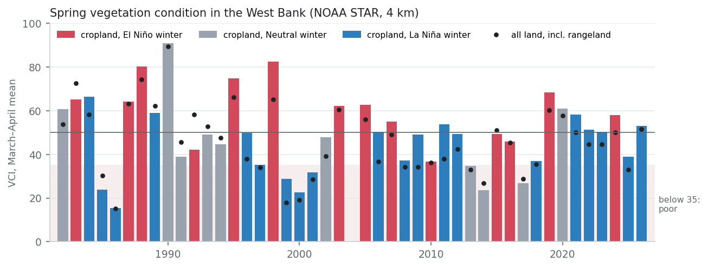
More about this figure
Bars: cropland; dots: all land, which adds the rangeland of the eastern slopes. March–April mean; 2004 has a data gap. r with Niño3.4: cropland +0.43, all land +0.55. Both drift down over the record (−2 points and −3 points a decade), with La Niña winters clustered late; with the trend removed, El Niño springs above the median number 11 and 13 of 14, La Niña springs 10 and 6 of 20.Every strong El Niño crop year since 1983
The six winters with December–February Niño3.4 of +1.5 °C or more since 1982, the closest analogues for 2026/27.
| Crop year | Niño3.4 DJF | Rain, Oct–Apr | Wheat and barley | Olives, bearing out | VCI cropland | VCI all land | Spring NDVI | Note |
|---|---|---|---|---|---|---|---|---|
| 1983 (winter 1982/83) | +2.2 | +33% | — | — | 65 | 73 | — | Wet winter, green spring. No official yield figures before 1994. |
| 1992 (winter 1991/92) | +1.8 | +60% | — | — | 42 | 58 | — | The wettest winter in ERA5's West Bank record and one of the two coldest (after the Pinatubo eruption). |
| 1998 (winter 1997/98) | +2.2 | +31% | +7% | −18% | 82 | 65 | — | Wet winter; the second-greenest cropland spring on record (after 1990); cereals slightly above trend. |
| 2010 (winter 2009/10) | +1.5 | −10% | +5% | — | 37 | 36 | +2% | Borderline strong (+1.50). A below-average winter despite El Niño; spring below the middle on NOAA's index, near normal on MODIS; cereals near trend. |
| 2016 (winter 2015/16) | +2.5 | +4% | +14% | — | 46 | 45 | +3% | Near-average winter and spring; cereals above trend. |
| 2024 (winter 2023/24) | +1.8 | +2% | — | — | 58 | 50 | +13% | Near-average winter, green spring by MODIS. FAOSTAT has no figures after 2022. |
Niño3.4 ≥ +1.5 °C in December–February.
Notes and method
Rain as a percentage above or below the 1991–2020 mean (ERA5, West Bank); yields and olives as in the table above (— = no official figure); VCI 50 is the middle of the record's range; spring NDVI for the whole West Bank against the 2001–2020 normal (from 2001).
What the record suggests for 2026/27
If the forecasts' wet October–December holds, the record leans towards a reasonable spring for rainfed cereals, pulses and pasture in 2027, in every zone and most visibly in the drier highlands, eastern slopes and Jordan Valley margins. What it shows is mainly a lower chance of a bad year, not a bumper one, and it rests on 9–14 El Niño years per record: the intervals around every count above are wide, and this is not a crop forecast. Olives will be set more by alternate bearing and by access than by the winter: a large 2026 crop would make a smaller 2027 crop likely whatever the rain.
Three limits apply. Every agricultural record here starts after 1979, inside the period in which the El Niño link to West Bank rain exists, and the coming El Niño is likely to be stronger than any in them. The timing of the rain, frost and spring heat also matter, and the season total does not capture them. And much of what will decide the 2027 harvest is not weather: access to land near Israeli settlements and behind the Barrier, settler violence, and the cost and availability of water and inputs.
Caveats
- A relationship that switched on can switch off. The El Niño link appears only after the late 1970s in every long record for both areas. The page's numbers describe 1979–2025, not a physical law, and the coming event is likely to be stronger than any in that period.
- Small samples and index choice. 14 El Niño winters since 1979 on the pinned index (16 on HadISST), six of them strong and two of those following major eruptions. Every hit rate here carries wide uncertainty, and the break at 1979 was identified from the data and the literature together.
- The records, Gaza. No rain gauge inside Gaza reports internationally. GPCC is a 1° analysis that takes in the southern coastal plain and north-western Negev; after 2019 it is the Monitoring product, built on fewer gauges. Beer Sheva is 46 km inland, drier, and one of GPCC's inputs, so the two are not independent. ERA5 is three 25 km cells, partly over the sea, and assimilates no rain gauges. IMERG is the satellite-only late run, which tracks the gauges less well year to year. Their agreement on the sign and the timing is the evidence; no single number is Gaza's.
- The records, West Bank. GPCC's 1° cells take in the Jordan Valley and the hills on both sides. The Jerusalem gauge is one hill-town site, is one of GPCC's inputs, and its record ends in 2015. ERA5's cells are smoother and lower than the hills, so it understates heavy days and cannot see snow. A storm that soaks one hillside is diluted in any West Bank average, so the storm counts here understate local downpours.
- Forecast calibration. The September 2026 SEAS5 issuance sat in the tails of its hindcast unusually often across the globe (see the Zimbabwe page); a very strong El Niño can do that, but the normalization check is not complete, and it has not been repeated for the October issuance. Read its return periods as a ranking. The last time El Niño and a positive Indian Ocean Dipole lined up, a “forecast of opportunity” for October–December 2023 gave better than 60 per cent odds of above-normal rain over Southwest Asia, and the season came in at the 15th percentile (Hoell et al. 2025).
- Rainfall is one of several winter hazards. Sea surge, wind and cold caused a large share of the damage and deaths in Gaza in the last three winters, and snow and flash floods have caused much of the West Bank's; none of them has a clear El Niño signal in this analysis or in the literature (windy days may be somewhat more frequent in El Niño winters; cold nights and snow are not).
- Impact figures. Counts from the Ministry of Health in Gaza, the Palestinian Civil Defense and the Government Media Office are relayed, not verified, by the UN; OCHA does not systematically monitor deaths that are not caused by the hostilities. Most West Bank weather impacts are reported by the Palestinian Civil Defense through the media, often as counts of incidents or rescues, and the UN quantified one West Bank weather event in three winters. Reporting practice changed between winters, several figures are cumulative or count exposure rather than impact, and the absence of counts is not an absence of impact.
References
- Price, C., Stone, L., Huppert, A., Rajagopalan, B. & Alpert, P. (1998). A possible link between El Niño and precipitation in Israel. Geophysical Research Letters 25, 3963–3966. doi:10.1029/1998GL900098
- Alpert, P. et al. (2005). Tropical tele-connections to the Mediterranean climate and weather. Advances in Geosciences 2, 157–160. doi:10.5194/adgeo-2-157-2005
- Mariotti, A., Zeng, N. & Lau, K.-M. (2002). Euro-Mediterranean rainfall and ENSO — a seasonally varying relationship. Geophysical Research Letters 29, 1621. doi:10.1029/2001GL014248; Mariotti, A., Ballabrera-Poy, J. & Zeng, N. (2005). Tropical influence on Euro-Asian autumn rainfall variability. Climate Dynamics 24, 511–521. doi:10.1007/s00382-004-0498-6
- Halfon, N., Ilotoviz, E., Carmona, Y., Yosef, Y. & Givati, A. (2026). The link between extreme El Niño values and precipitation in Israel (Hebrew; author names transliterated). Israel Meteorological Service technical report, July 2026. ims.gov.il (not peer-reviewed)
- Hochman, A. & Gildor, H. (2025). Synergistic effects of El Niño–Southern Oscillation and the Indian Ocean Dipole on Middle Eastern subseasonal precipitation variability and predictability. QJRMS 151, e4903. doi:10.1002/qj.4903
- Kang, I.-S. et al. (2015). Multidecadal changes in the relationship between ENSO and wet-season precipitation in the Arabian Peninsula. Journal of Climate 28, 4743–4752. doi:10.1175/JCLI-D-14-00388.1; Kamil, S. et al. (2017). Multidecadal changes in the relationship of storm frequency over Euro-Mediterranean region and ENSO during boreal winter. Earth Systems and Environment 1. doi:10.1007/s41748-017-0011-0
- Dayan, U., Nissen, K. M. & Ulbrich, U. (2015). Atmospheric conditions inducing extreme precipitation over the eastern and western Mediterranean. NHESS 15, 2525–2544. doi:10.5194/nhess-15-2525-2015
- Nissen, K. M. et al. (2010). Cyclones causing wind storms in the Mediterranean. NHESS 10, 1379–1391. doi:10.5194/nhess-10-1379-2010; Sandler, D. et al. (2024). The connection between North Atlantic storm track regimes and eastern Mediterranean cyclonic activity. Weather and Climate Dynamics 5, 1103–1116. doi:10.5194/wcd-5-1103-2024
- Dogar, M. M. et al. (2017). Sensitivity of the regional climate in the Middle East and North Africa to volcanic perturbations. JGR Atmospheres 122, 7922–7948. doi:10.1002/2017JD026783
- Hoell, A. et al. (2025). An unexpected outcome followed an apparent seasonal forecast of opportunity and prolonged drought in Southwest Asia. International Journal of Climatology 45. doi:10.1002/joc.8851
- NOAA CPC ENSO diagnostic discussion, 10 September 2026 link; IRI ENSO forecast, 21 September 2026 link.
- IOM, Site Management Cluster & Shelter Cluster (2026). Sites exposed to flood risk: Phase one outlook for rainy season 2026–27 link; Shelter Cluster (2026). Exposed on all sides: shelter severity and household needs across accessible areas in Gaza link; OCHA Humanitarian Situation Report, 25 September 2026 link.
- Rainfall: GPCC Full Data v2020 to 2019 + Monitoring v2020 after (DWD), combined 1° product via NOAA PSL; ERA5 hourly time series (Copernicus Climate Change Service); IMERG late run v7 (NASA), from the team blob; GHCN-Daily Beer Sheva IS000051690 (NOAA NCEI). Niño3.4: NOAA PSL (ERSST v5 pinned; HadISST before 1950). SEAS5 skill from the seas5-skill app's detrended skill cube; the October 2026 return periods from the team's admin-1 raster statistics with the same method. Boundaries: COD-AB (OCHA) via FieldMaps.
- Dudeen, B. (2001). The soils of Palestine (the West Bank and Gaza Strip): current status and future perspectives. In Zdruli et al. (eds), Soil resources of Southern and Eastern Mediterranean countries, Options Méditerranéennes B 34, CIHEAM, 203–225.
- FAO (2026). FAOSTAT: Crops and livestock products (listed by FAO as “Palestine”), 1994–2022.
- PCBS. Olive Presses Survey, main results, 2003–2019 (e.g. 2019); Agricultural Census 2021, final results. Rows and sources in
deep_dives/data/pcbs_*.csv. - NOAA STAR. Blended Vegetation Health Products, province-averaged (West Bank), 1982–2026.
- Didan, K. (2021). MODIS/Terra Vegetation Indices 16-Day L3 Global 250m (MOD13Q1 v061), NASA LP DAAC; read from the Microsoft Planetary Computer.
- OCHA (2025). Humanitarian Situation Update #335, West Bank, 30 October 2025.
- Al Jazeera (2025). Oil presses stand silent as West Bank has its worst olive harvest in years, 3 December 2025 (estimates from MAS).
Generated by levant_deep_dive.py from deep_dives/gaza-west-bank.toml and deep_dives/parts/gaza.toml, deep_dives/parts/west-bank.toml. Grid method and Niño3.4 series as in the global survey.